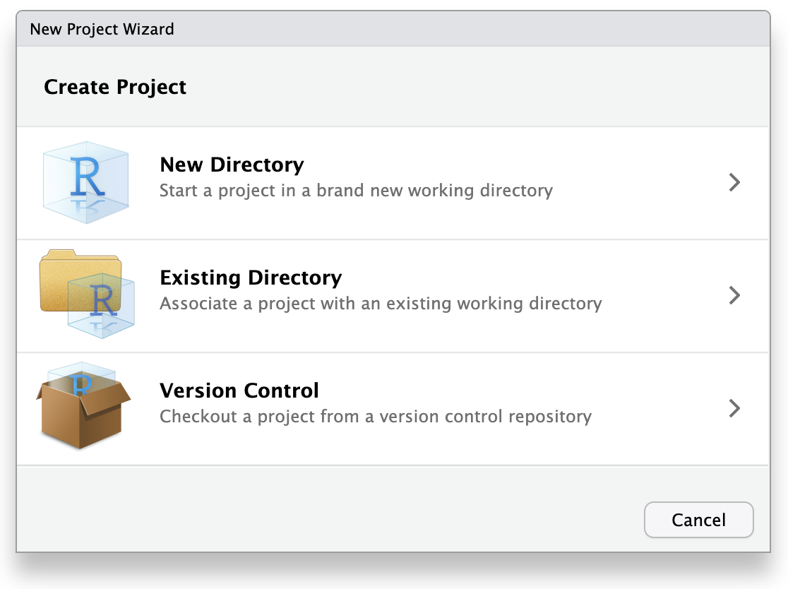
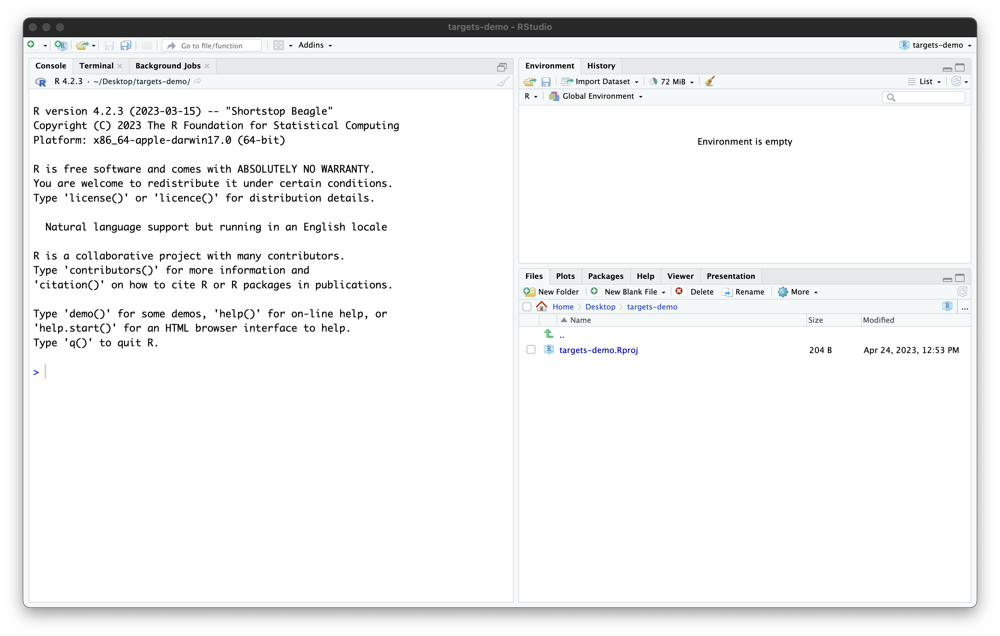
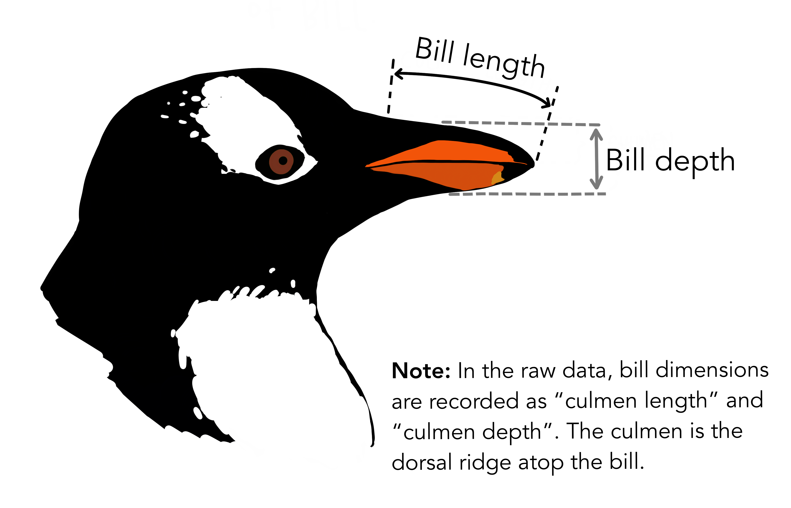
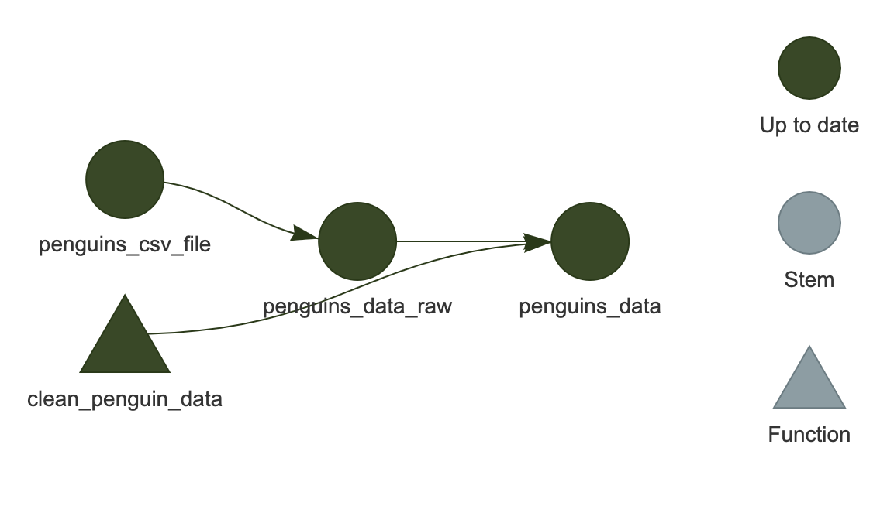
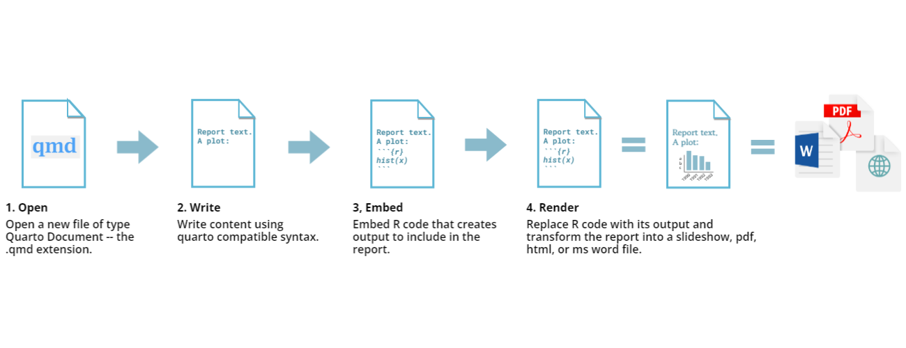

一つにまとまったページ
Content from はじめに
最終更新日：2026-10-23 | ページの編集
所要時間： 13分
概要
質問
- 再現性を重視すべき理由は何ですか？
-
targetsはどのようにして再現性の達成を助けますか？
目的
- 再現性が科学にとってなぜ重要なのかを説明する
- 再現性を高める
targetsの機能について説明する
エピソードの概要: 再現性の概念と targets
を使用する理由や対象者について紹介する
再現性とは何ですか？
再現性とは、他の人（将来の自分自身を含む）があなたの分析を再現できる能力のことです。
科学的な分析の結果に自信を持つためには、それらが再現可能でなければなりません。
しかし、再現性は二元的な概念（再現不可能 vs. 再現可能）ではなく、再現性が低いから再現性が高いまでのスケールがあります。
targets は分析を より再現性の高いもの
にするために大きく貢献します。
再現性をさらに高めるために使用できる他の方法としては、Docker、conda、renv などのツールを使用してコンピューティング環境を管理することがありますが、このワークショップではそれらを扱う時間がありません。
targets とは何ですか？
targets は、Will Landau
氏によって開発および維持されている R
プログラミング言語向けのワークフローマネジメントパッケージです。
targets の主な機能には以下が含まれます：
- ワークフローの自動化
- ワークフローのステップのキャッシング
- ワークフローのステップのバッチ作成（多くの似たステップを一度に定義すること）
- ワークフローのレベルでの並列化
これにより、以下のことが可能になります：
- 他の作業をした後にプロジェクトに戻り、混乱や何をしていたかを思い出すことなくすぐに作業を再開できる
- ワークフローを変更した場合、変更の影響を受ける部分のみを再実行できる
- 個々の関数を変更することなくワークフローを大規模に拡張できる
targets における再現性
Q: 上記の機能は、どのようにしてより高い再現性をもたらしますか？
ワークフロー全体が自動化されているため、ユーザーに依存するステップがありません。 したがって、将来のユーザーも同じ結果を得ることができます。
誰が targets を使用すべきですか？
targets
はワークフローマネジメントソフトウェアの唯一のものではありません。
類似のツールは数多く存在し、それぞれに異なる機能やユースケースがあります。
例えば、snakemake は
Python 向けの人気のあるワークフローツールであり、make
は長い歴史を持つ Bash スクリプトの自動化ツールです。
targets は特に R と連携するように設計されているため、主に R
を使用する場合、または R を使用する予定がある場合に最も適しています。
他のツールを主に使用する場合は、代替手段を検討することをお勧めします。
このワークショップの目標は、R
での再現可能なデータ分析のために targets
の使い方を学ぶことです。
さらに情報を得るには
targets
は高度なパッケージであり、このワークショップでカバーできる以上に学ぶことがたくさんあります。
targets
の学習を続けるためのおすすめリソースは以下の通りです：
-
targetsの作者である Will Landau氏 による The targets R package user manual は、targetsに真剣に興味がある人にとって必読とすべきです。 - targets discussion board は質問をしたり助けを得たりするのに最適な場所です。ただし、質問をする前に必ず help のポリシーを読む ことを確認してください。
-
targetsのウエブサイト
には、すべての
targets関数のドキュメントが含まれています。 -
tarchetypesのウエブサイト
には、すべての
tarchetypes関数のドキュメントが含まれています。tarchetypesはほぼ確実にtargetsと一緒に使用するため、両方を参照することをお勧めします。 - Reproducible computation at scale in R with targets は、Keras を用いて顧客の離脱を分析する Will Landau氏 によるチュートリアルです。
-
Recorded
talks および example
projects は、
targetsの README に記載されています。
例示データセットについて
このワークショップでは、南極のパルマー群島の島々で観察された成体の採餌アデリーペンギン、チンストラップペンギン、ジェンツーペンギンの測定データを分析します。
データは R の基本パッケージ（バージョン 4.5.0 以降）に
penguins および penguins_raw
として含まれています。データに関する詳細情報は ?penguins
を実行することで得られます。

penguins
データセットの3種のペンギン。アートワーク：@allison_horst.分析の目標は、線形モデルを使用してくちばしの長さと深さの関係を明らかにすることです。
このレッスンを通じて分析を段階的に構築していきます。
- 科学的分析の結果に自信を持つためには、他の人（将来の自分自身を含む）がそれを再現できなければならない
-
targetsはワークフローの自動化によって再現性の達成を助ける -
targetsは R プログラミング言語と連携するように設計されている - このワークショップの例示データセットには、南極のペンギンの測定データが含まれている
Content from 初めての targets ワークフロー
最終更新日：2026-10-23 | ページの編集
所要時間： 50分
概要
質問
- 分析を整理するためのベストプラクティスは何ですか？
-
_targets.Rファイルは何のためのものですか？ -
_targets.Rファイルの内容は何ですか？ - ワークフローを実行するにはどうしますか？
目的
- RStudioでプロジェクトを作成する
-
_targets.Rファイルの目的を説明する - 基本的な
_targets.Rファイルを書く -
_targets.Rファイルを使用してワークフローを実行する
エピソードの概要: 非常にシンプルなワークフローを書いて、初めて実際に手を動かしてみる機会
プロジェクトの作成
プロジェクトについて
targets
は分析を整理するために「プロジェクト」の概念を使用します。特定のプロジェクトに必要なすべてのファイルを1つのフォルダ、プロジェクトフォルダにまとめます。
プロジェクトフォルダには、データ、コード、結果用のフォルダなど、整理のための追加のサブフォルダがあります。
プロジェクトを使用することで、他の作業に時間を費やした後に分析に戻った際に、簡単に再び方向付けることができます。
もし一度に1つの作業のみを完了させる場合は問題になりませんが、実際にはほとんどの場合そうではありません。
他の作業をした後にプロジェクトに戻るときに、何をしていたかを覚えておくのは難しいです（「コンテキストスイッチング」と呼ばれる現象）。
標準化された整理システムを使用することで、混乱や時間の浪費を減らすことができます。つまり、再現性を高めることになります！
このワークショップでは、プロジェクトの整理概念ともうまく連携する RStudio を使用します。
RStudioでプロジェクトを作成する
RStudioを使用して新しいプロジェクトを開始しましょう。
「ファイル」をクリックし、「新しいプロジェクト」を選択します。
これにより、新しいプロジェクトウィザードが開き、プロジェクトの設定を手助けする一連のメニューが表示されます。

ウィザードで最初のオプション「新しいディレクトリ」をクリックします。これは、新しいプロジェクトをゼロから作成するためです。
次のメニューで「新しいプロジェクト」をクリックします。
「ディレクトリ名」には、プロジェクトの目的を思い出しやすい名前を入力します。例えば「targets-demo」（ファイルやフォルダの命名のベストプラクティスに従ってください）。
「プロジェクトをサブディレクトリとして作成する…」の下で、「参照」ボタンをクリックしてプロジェクトを配置するディレクトリを選択します。
プロジェクトを簡単に見つけられるように、デスクトップに配置することをお勧めします。
「Gitリポジトリを作成」と「このプロジェクトで renv を使用する」はチェックを外したままにできますが、これらは再現性を向上させる優れたツールです。もしまだであれば、将来的に学習して使用することを検討してください。
これらは後からでも有効にできるため、すぐに使用しようと心配する必要はありません。
これらの手順を進めると、RStudioのセッションは次のようになります：

プロジェクトには現在、RStudioによって作成された1つのファイル
targets-demo.Rproj
が含まれています。このファイルを手動で編集しないでください。その目的は、RStudioにこのフォルダがプロジェクトフォルダであることを伝え、いくつかのRStudio設定を保存することです（バージョン管理ソフトウェアを使用している場合は、このファイルをコミットしても構いません）。また、ファイルエクスプローラーで
.Rproj
ファイルをダブルクリックすることでプロジェクトを開くことができます（RStudioを終了してからファイルブラウザでデスクトップに移動し、「targets-demo」フォルダを開いて
targets-demo.Rproj
をダブルクリックして試してください）。
さて、プロジェクトが設定されたので、targets
を（ほぼ）使い始める準備ができました！
背景: targets を使用しないバージョン
まず、使用する関数やパッケージに慣れるために、targets
を使用せずに「通常の」Rスクリプトのようにコードを実行してみましょう。
データには、R の基本パッケージに含まれているペンギンのデータ（R バージョン 4.5.0 以降）を使用していることを思い出してください。
実際にはデータセットには2つのバリエーションがあります。penguins
はクリーンなデータ、penguins_raw は生データです。
（penguins_raw が見つからないというエラーが出た場合は、R
をバージョン 4.5.0
以降に更新する必要があります。セットアップの手順を参照してください。）
実際のところ、生データは外部に保存されていることが多いため、生のペンギンデータ
を分析の出発点として使用しましょう。
これを再現するために、まず生データをプロジェクト内の CSV
ファイルとして保存します。 プロジェクトフォルダ内に data
という新しいフォルダを作成してください（たとえば、RStudio の Files
ペインにある “New Folder” ボタンを使います）。 その後、R
コンソールで次のコードを実行します：
R
# Save the raw data to a CSV file in the data folder
write.csv(penguins_raw, "data/penguins_raw.csv", row.names = FALSE)
# The path to the CSV file
penguins_csv_file <- "data/penguins_raw.csv"
データの読み込みと操作には、tidyverse
パッケージ群を使用します。
今は tidyverse
の使用方法のすべての詳細をカバーする時間がありませんが、詳細を学びたい場合は、“tidyverse
を使用したデータの操作、分析、およびエクスポート” レッスン、または
Carpentry Incubator のレッスン R
and the tidyverse for working with datasets を参照してください。
read_csv() を使用してデータを読み込みましょう。
R
library(tidyverse)
# Read CSV file into R
penguins_data_raw <- read_csv(penguins_csv_file)
penguins_data_raw
出力
Rows: 344 Columns: 17
── Column specification ────────────────────────────────────────────────────────
Delimiter: ","
chr (9): studyName, Species, Region, Island, Stage, Individual ID, Clutch C...
dbl (7): Sample Number, Culmen Length (mm), Culmen Depth (mm), Flipper Leng...
date (1): Date Egg
ℹ Use `spec()` to retrieve the full column specification for this data.
ℹ Specify the column types or set `show_col_types = FALSE` to quiet this message.出力
# A tibble: 344 × 17
studyName `Sample Number` Species Region Island Stage `Individual ID`
<chr> <dbl> <chr> <chr> <chr> <chr> <chr>
1 PAL0708 1 Adelie Penguin… Anvers Torge… Adul… N1A1
2 PAL0708 2 Adelie Penguin… Anvers Torge… Adul… N1A2
3 PAL0708 3 Adelie Penguin… Anvers Torge… Adul… N2A1
4 PAL0708 4 Adelie Penguin… Anvers Torge… Adul… N2A2
5 PAL0708 5 Adelie Penguin… Anvers Torge… Adul… N3A1
6 PAL0708 6 Adelie Penguin… Anvers Torge… Adul… N3A2
7 PAL0708 7 Adelie Penguin… Anvers Torge… Adul… N4A1
8 PAL0708 8 Adelie Penguin… Anvers Torge… Adul… N4A2
9 PAL0708 9 Adelie Penguin… Anvers Torge… Adul… N5A1
10 PAL0708 10 Adelie Penguin… Anvers Torge… Adul… N5A2
# ℹ 334 more rows
# ℹ 10 more variables: `Clutch Completion` <chr>, `Date Egg` <date>,
# `Culmen Length (mm)` <dbl>, `Culmen Depth (mm)` <dbl>,
# `Flipper Length (mm)` <dbl>, `Body Mass (g)` <dbl>, Sex <chr>,
# `Delta 15 N (o/oo)` <dbl>, `Delta 13 C (o/oo)` <dbl>, Comments <chr>生データにはスペースを含む扱いにくい列名があり（これらはタイプミスしやすくコードのミスにつながりやすい）、必要なものよりもはるかに多くの列があります。
この分析の目的では、種名、くちばしの長さ、くちばしの深さのみが必要です。
生データでは、「culmen」というやや技術的な用語がくちばしを指すために使用されています。

下流の分析で使用しやすくするためにデータを整理しましょう。
後で一部の関数でエラーを引き起こす可能性があるため、欠損データを含む行も削除します。
R
# Clean up raw data
penguins_data <- penguins_data_raw |>
# Rename columns for easier typing and
# subset to only the columns needed for analysis
select(
species = Species,
bill_length_mm = `Culmen Length (mm)`,
bill_depth_mm = `Culmen Depth (mm)`
) |>
# Delete rows with missing data
drop_na()
penguins_data
出力
# A tibble: 342 × 3
species bill_length_mm bill_depth_mm
<chr> <dbl> <dbl>
1 Adelie Penguin (Pygoscelis adeliae) 39.1 18.7
2 Adelie Penguin (Pygoscelis adeliae) 39.5 17.4
3 Adelie Penguin (Pygoscelis adeliae) 40.3 18
4 Adelie Penguin (Pygoscelis adeliae) 36.7 19.3
5 Adelie Penguin (Pygoscelis adeliae) 39.3 20.6
6 Adelie Penguin (Pygoscelis adeliae) 38.9 17.8
7 Adelie Penguin (Pygoscelis adeliae) 39.2 19.6
8 Adelie Penguin (Pygoscelis adeliae) 34.1 18.1
9 Adelie Penguin (Pygoscelis adeliae) 42 20.2
10 Adelie Penguin (Pygoscelis adeliae) 37.8 17.1
# ℹ 332 more rows完全な分析はまだ実行していませんが、これで targets
を使用する形に移行する準備は十分です。
targets バージョン
_targets.R ファイルについて
典型的なRのデータ分析と targets
プロジェクトの大きな違いの一つは、後者にはメインプロジェクトフォルダ（「プロジェクトルート」）に特別なファイル
_targets.R を含める必要があることです。
_targets.R
ファイルにはワークフローの仕様が含まれており、Rに分析を実行させるための指示が記述されています。これはレシピのようなものです。
_targets.R
ファイルを使用することで、特定のスクリプトを特定の順序で実行することを覚えておく必要がなくなります。代わりに、Rがそれを自動的に実行してくれます！
これは、将来の自分自身にとっても、分析を再現しようとする他の人にとっても、非常に大きな利点です。
最初の _targets.R ファイルの作成
これから _targets.R
ファイルの作成を開始します。幸い、targets
にはこれを手助けする関数が用意されています。
Rコンソールで、まず library(targets) で
targets パッケージを読み込み、次に
tar_script() コマンドを実行します。
R
library(targets)
tar_script()
コンソールでは何も起こりませんが、ファイルビューアに新しいファイル
_targets.R
が表示されます。ファイルメニューを使用するか、クリックして開いてください。
R
library(targets)
# This is an example _targets.R file. Every
# {targets} pipeline needs one.
# Use tar_script() to create _targets.R and tar_edit()
# to open it again for editing.
# Then, run tar_make() to run the pipeline
# and tar_read(data_summary) to view the results.
# Define custom functions and other global objects.
# This is where you write source(\"R/functions.R\")
# if you keep your functions in external scripts.
summarize_data <- function(dataset) {
colMeans(dataset)
}
# Set target-specific options such as packages:
# tar_option_set(packages = "utils") # nolint
# End this file with a list of target objects.
list(
tar_target(data, data.frame(x = sample.int(100), y = sample.int(100))),
tar_target(data_summary, summarize_data(data)) # Call your custom functions.
)
このファイルの細部は気にしなくて大丈夫です。 その代わりに、3つの主要な部分が含まれていることに注目してください：
-
library()を使用したパッケージの読み込み -
function()を使用したカスタム関数の定義 -
list()を使用したリストの定義
function() を使ったことがない方もいるかもしれません。
その場合も問題ありません。次のエピソードで詳しく扱うので、今は無視してください。
最後の部分であるリストは、_targets.R
ファイルの中で最も重要な部分です。
ワークフローのステップを定義します。 _targets.R
ファイルは常にこのリストで終わらなければなりません。
さらに、リスト内の各項目は tar_target()
関数の呼び出しです。 tar_target()
の最初の引数はビルドするターゲットの名前で、2番目の引数はそれをビルドするために使用するコマンドです。
ターゲットの名前は引用符なし、つまり、引用符で囲まれていないことに注意してください。
例示分析を実行するための _targets.R の修正
まず、ワークフローに必要なパッケージをすべて読み込みましょう。
_targets.R の先頭、library(targets) の後に
library(tidyverse) を追加します。
次に、function()
文は今はまだ使わないので削除できます（カスタム関数についてはすぐ後で扱います！）。
最後の、そして最も難しい部分は、ファイル末尾のリストでワークフローを正しく定義することです。
targets
を使用しないバージョンから、ここまでに3つのステップがあることがわかります：
- 生のペンギンデータを含むCSVファイルへのパスを定義する。
- CSVファイルを読み込む。
- 生データをクリーニングする。
これらはそれぞれリストの1つの項目になります。 さらに、各項目は
tar_target() 関数を使用して書く必要があります。
tar_target()
関数は、ビルドするターゲットの名前を最初に、それをビルドするコマンドを2番目に書くことを思い出してください。
適切なターゲット名の選び方
各ターゲットの名前は自由に決めて構いませんが、ターゲットが実際に何を含んでいるかを反映した名前を選ぶことを強くお勧めします。
たとえば、CSVファイルから読み込んだ生データには x
ではなく penguins_data_raw という名前を付けます。
将来の自分自身が感謝するでしょう！
チャレンジ: tar_target()
を使ってみよう
tar_target()
を使って、ワークフローの最初のステップ（ペンギンデータを含むCSVファイルへのパスの設定）を定義できますか？
R
tar_target(name = penguins_csv_file, command = "data/penguins_raw.csv")
tar_target()
の最初の2つの引数は、ターゲットの名前と、それをビルドするコマンドです。
これらの引数は頻繁に使用されるため、通常は引数名を省略して、次のように書きます：
R
tar_target(penguins_csv_file, "data/penguins_raw.csv")
最初のターゲットの定義方法がわかったので、続けて残りを追加しましょう。
追加し終えると、_targets.R
は次のようになるはずです：
R
library(targets)
library(tidyverse)
list(
tar_target(penguins_csv_file, "data/penguins_raw.csv"),
tar_target(
penguins_data_raw,
read_csv(penguins_csv_file, show_col_types = FALSE)
),
tar_target(
penguins_data,
penguins_data_raw |>
select(
species = Species,
bill_length_mm = `Culmen Length (mm)`,
bill_depth_mm = `Culmen Depth (mm)`
) |>
drop_na()
)
)
read_csv() で show_col_types = FALSE
に設定したのは、先ほどのコードから列の型がデフォルトで正しく設定されている（種には文字列、くちばしの長さと深さには数値）ことがわかっているためです。したがって、通常発生する警告を表示する必要はありません。
ワークフローの実行
ワークフローができたので、tar_make()
関数を使用して実行できます。
それを実行してみてください。次のようなものが表示されるはずです：
R
tar_make()
出力
+ penguins_csv_file dispatched
✔ penguins_csv_file completed [1ms, 74 B]
+ penguins_data_raw dispatched
✔ penguins_data_raw completed [64ms, 10.40 kB]
+ penguins_data dispatched
✔ penguins_data completed [10ms, 1.61 kB]
✔ ended pipeline [238ms, 3 completed, 0 skipped]おめでとうございます、targets
を使って最初のワークフローを実行しました！
ワークフローは対話的に実行できません
RStudioなどのIDEで、行を選択して「Run」ボタン（またはキーボードショートカット）を押すことで、Rコードを対話的に実行することに慣れているかもしれません。
_targets.R
の末尾にあるリストをこの方法で実行することもできますが、ワークフローは実行されません（代わりにリストが返されます）。
ワークフローを実行する唯一の方法は tar_make()
です。
_targets.R
の中で何かを選択して対話的に実行する必要はありません。
実際、tar_make() でワークフローを実行するために
_targets.R
ファイルを開いておく必要すらありません—ぜひ自分で試してみてください！
同様に、_targets.R ファイルに
tar_make()
を書いてはいけません。tar_make()
はRコンソールで直接コマンドとして使用するだけにしてください。
覚えておいてください。targets
を使用している今、分析を再現するために必要なのは
tar_make() を実行することだけです。
これは、分析がどれだけ長く複雑になっても変わりません。
- プロジェクトは分析を整理しておくのに役立ち、後で簡単に再実行できます
- RStudioのプロジェクトウィザードを使用してプロジェクトを作成する
-
_targets.Rファイルはすべてのtargetsプロジェクトに含める必要がある特別なファイルであり、ワークフローを定義します -
tar_script()を使用してデフォルトの_targets.Rファイルを作成する -
tar_make()を使用してワークフローを実行する
Content from 関数の簡単な紹介
最終更新日：2026-10-23 | ページの編集
所要時間： 30分
概要
質問
- 関数とは何ですか？
- なぜ関数の書き方を知っておくべきですか？
- 関数の主な構成要素は何ですか？
目的
- カスタム関数の有用性を理解する
- 関数を書くための基本的な概念を理解する
Episode summary: 関数の使用経験がない学習者がいる場合のための、関数のごく簡単な紹介。
関数について
Rの関数は、パッケージから提供されるものだと考えるのに慣れているかもしれません。パッケージから専門的な関数を探してインストールし、作業を進めるために使用します。
しかし、自分で関数を書くこともできますし、書くべきだとも言えるでしょう！ 関数は、同じ操作を異なる設定で簡単に繰り返すための優れた方法です。 スクリプト内でまったく同じコードをコピー＆ペーストし、いくつかの部分（変数や入力など）だけを変更して再び実行したことが何度ありますか？ その後でコードにエラーがあることに気づき、修正するときには、そのコードをコピーしたすべての場所で修正することを覚えておかなければなりません。
関数を書くことで、こうした手戻りを減らし、より効率的なワークフローを作ることができます。 バグを見つけたときは、自分で作った関数という1か所を修正するだけで、その後のその関数の呼び出しはすべて修正されたものになります。
さらに、targets
はカスタム関数を多用するため、関数がどのように動作するかについての基本的な理解は、targets
をうまく使うためにとても重要です。
関数を書く
自分で関数を書くことと、Rで他のコードを書くことの間に大きな違いはありません。あなたはこれまでどおりRでコーディングしているのです！
ペンギンのデータにあるミリメートルの測定値を、センチメートルに変換したいとしましょう（head()
を使って最初の数行だけを表示します）。
R
library(tidyverse)
penguins |>
mutate(
bill_len_cm = bill_len / 10,
bill_dep_cm = bill_dep / 10
) |>
head()
出力
species island bill_len bill_dep flipper_len body_mass sex year
1 Adelie Torgersen 39.1 18.7 181 3750 male 2007
2 Adelie Torgersen 39.5 17.4 186 3800 female 2007
3 Adelie Torgersen 40.3 18.0 195 3250 female 2007
4 Adelie Torgersen NA NA NA NA <NA> 2007
5 Adelie Torgersen 36.7 19.3 193 3450 female 2007
6 Adelie Torgersen 39.3 20.6 190 3650 male 2007
bill_len_cm bill_dep_cm
1 3.91 1.87
2 3.95 1.74
3 4.03 1.80
4 NA NA
5 3.67 1.93
6 3.93 2.06これは複雑な操作ではありませんが、それでもこの変換を行ってくれる便利なカスタム関数を作りたいかもしれません。
関数を書くには、function() 関数を使用します。
この関数では、関数の入力引数となるものを括弧の中に、そしてそれらの入力引数を使って関数が行う処理を、括弧の後ろの波括弧
{} の中に記述します。
これを代入するオブジェクトの名前が、そのまま関数の名前になります。
R
my_function <- function(argument1, argument2) {
# the things the function will do
}
# call the function
my_function(1, "something")
mm から cm への変換を行う関数は次のようになります：
R
mm2cm <- function(x) {
x / 10
}
このカスタム関数は、任意の数値の入力を10で割って変換します。
試してみましょう：
R
penguins |>
mutate(
bill_len_cm = mm2cm(bill_len),
bill_dep_cm = mm2cm(bill_dep)
) |>
head()
出力
species island bill_len bill_dep flipper_len body_mass sex year
1 Adelie Torgersen 39.1 18.7 181 3750 male 2007
2 Adelie Torgersen 39.5 17.4 186 3800 female 2007
3 Adelie Torgersen 40.3 18.0 195 3250 female 2007
4 Adelie Torgersen NA NA NA NA <NA> 2007
5 Adelie Torgersen 36.7 19.3 193 3450 female 2007
6 Adelie Torgersen 39.3 20.6 190 3650 male 2007
bill_len_cm bill_dep_cm
1 3.91 1.87
2 3.95 1.74
3 4.03 1.80
4 NA NA
5 3.67 1.93
6 3.93 2.06おめでとうございます、最初のカスタム関数を作成して使用しました！
既存のコードから関数を作る
すでに手元にあるコードを使って関数を作りたい場合も多いでしょう。
たとえば、あるコードを何度もコピー＆ペーストしていて、そのコードが繰り返しになっていることに気づいたとき、関数にするのが適切です。
あるいは、ワークフローを targets
に変換する際に、スクリプトを targets
が呼び出す一連の関数に変更する必要がある場合もあります。
ペンギンのデータをクリーニングするために使ったコードを思い出してください：
R
penguins_data_raw |>
select(
species = Species,
bill_length_mm = `Culmen Length (mm)`,
bill_depth_mm = `Culmen Depth (mm)`
) |>
drop_na()
このコードを関数にするために調整する必要があります。この関数には、クリーニング対象のデータセットという引数が1つ必要です。
次のようになります：
R
clean_penguin_data <- function(penguins_data_raw) {
penguins_data_raw |>
select(
species = Species,
bill_length_mm = `Culmen Length (mm)`,
bill_depth_mm = `Culmen Depth (mm)`
) |>
drop_na()
}
この関数を、_targets.R の library()
でパッケージを読み込む部分の後、末尾のリストの前に追加してください。
RStudioの関数抽出機能
RStudioには、コードの一部から関数を抽出してくれる便利な機能もあります。 関数に少し慣れてくれば、コードを関数にする際に必要な入力を見極めるのに役立つでしょう。
使うには、関数にしたいコードの部分をハイライトします。
今回の場合は、penguins_data_raw から drop_na()
文までのパイプライン全体です。
ハイライトしたら、RStudioの上部バーの「Code」から「Extract
function」を選択します。
Enterキーを押すよう求めるプロンプトが開き、カーソルがあった位置に次のようなコードがスクリプトに挿入されます。
ただし、この関数は引数として必要以上のものを含んでいるため、そのままでは動作しません。
これは、tidyverse が非標準評価を使用しており、select()
の中で引用符なしの列名を書けるためです。
関数抽出機能は、コード内の引用符なし（またはバッククォートで囲まれた）テキストはすべてオブジェクトへの参照だと判断してしまいます。
関数を動作させるには手作業での修正が必要になるため、すでに関数に少し慣れていたほうが便利です。
チャレンジ: 数値ベクトルを受け取り、その平均を10で割った値を返す関数を書いてください。
R
vecmean <- function(x) {
mean(x) / 10
}
ワークフローで関数を使う
カスタムのデータクリーニング関数を定義したので、ワークフローで使ってみましょう。
どのようにすればよいか、わかりますか？
最後の tar_target()
から対応するコードを削除し、新しい関数の呼び出しに置き換える必要があります。
ワークフローを次のように修正してください：
R
library(targets)
library(tidyverse)
clean_penguin_data <- function(penguins_data_raw) {
penguins_data_raw |>
select(
species = Species,
bill_length_mm = `Culmen Length (mm)`,
bill_depth_mm = `Culmen Depth (mm)`
) |>
drop_na()
}
list(
tar_target(penguins_csv_file, "data/penguins_raw.csv"),
tar_target(penguins_data_raw, read_csv(
penguins_csv_file, show_col_types = FALSE)),
tar_target(penguins_data, clean_penguin_data(penguins_data_raw))
)
ワークフローが最新の状態であることを確認するため、tar_make()
でもう一度実行しましょう：
R
tar_make()
出力
+ penguins_data dispatched
✔ penguins_data completed [11ms, 1.61 kB]
✔ ended pipeline [138ms, 1 completed, 2 skipped]targets()
が出力するメッセージについては、すぐ後で詳しく学びます。
関数によってコードの理解が容易になる
末尾のターゲットのリストが、分析の高レベルな要約のように見え始めていることに注目してください。
これはカスタム関数を使うもう一つの利点です：関数を使うことで、各ワークフローステップの詳細を、ワークフロー全体から切り離すことができます。
ワークフロー全体を理解するために、データがどのようにクリーニングされたかの詳細をすべて知る必要はありません。クリーニングのステップがあったことさえわかれば十分です。 一方、データクリーニングの具体的な内容に立ち返って詳しく調べる必要がある場合は、その関数の内部で何が行われているかだけに注目すればよく、ワークフローの残りの部分は無視できます。 これによりコードの理解が容易になり、バグが減り、最終的に時間と労力の節約につながります。
ここでは関数のほんの入り口に触れただけですので、関数について学ぶにはさらに助けが必要になるでしょう。 詳しくは、Carpentries の R Novice レッスンにある、関数についてのエピソードを読むことをお勧めします。
- 同じコードを、わずかな違いで何度も繰り返す場合に、関数は欠かせません
- RStudioの「Extract function」ツールは、コードを関数に変換する作業を始める助けになります
- 関数は
targetsの仕組みに欠かせない要素です
Content from ワークフローオブジェクトの読み込み
最終更新日：2026-10-23 | ページの編集
所要時間： 15分
概要
質問
- ワークフローはどこで実行されますか？
- ワークフローによって作成されたオブジェクトをどのように検査できますか？
目的
-
targetsがワークフローを実行する場所とその理由を説明する - ワークフローによって作成されたオブジェクトをRセッションにロードできるようにする
エピソードの概要: 作成したオブジェクトにアクセスする方法を示す
ワークフローはどこで実行されますか？
私たちはちょうどワークフローを実行しました。
今、出力を見たいと思うでしょう。 しかし、オブジェクトの名前（例えば
penguins_data）を呼び出すだけではエラーが発生します。
R
penguins_data
エラー
Error:
! object 'penguins_data' not foundワークフローの結果はどこにありますか？
-
targetsが別のRセッションで実行されるという概念を強調するために、penguins_dataを実行しようとしてエラーになるふりをして驚きを装い、それを教育的な瞬間として使用することができます（エラーは教育の一部です！）。
ワークフローの結果が見えないのは、targets
がワークフローを別のRセッションで実行するためであり、そのセッションと対話することができないからです。
これは再現性のためです—ワークフローによって作成されたオブジェクトは、プロジェクト内のコードのみに依存すべきであり、Rに対してインタラクティブに与えたコマンドには依存すべきではありません。
幸いにも、targets
にはワークフローによって作成されたオブジェクトを現在のセッションにロードするために使用できる関数、tar_load()
があります。 どのように機能するか見てみましょう。
tar_load()
tar_load()
は、ワークフローによって作成されたオブジェクトを現在のセッションにロードします。
最初の引数はロードしたいオブジェクトの名前です。 これを使用して
penguins_data をロードし、summary()
でデータの概要を取得しましょう。
R
tar_load(penguins_data)
summary(penguins_data)
出力
species bill_length_mm bill_depth_mm
Length :342 Min. :32.10 Min. :13.10
N.unique : 3 1st Qu.:39.23 1st Qu.:15.60
N.blank : 0 Median :44.45 Median :17.30
Min.nchar: 33 Mean :43.92 Mean :17.15
Max.nchar: 41 3rd Qu.:48.50 3rd Qu.:18.70
Max. :59.60 Max. :21.50 tar_load()
は副作用—望むオブジェクトを現在のRセッションにロードするために使用されます。
実際には値を返しません。
targets キャッシュ
Rセッションを終了し、再起動して tar_load()
を使用すると、ワークフローオブジェクトをまだロードできることに気づくでしょう。
言い換えれば、ワークフローの出力はRセッション間で保存されています。
これはどのように可能なのでしょうか？
プロジェクトに新しいフォルダ _targets
が現れたことに気づいたかもしれません。 これはtargets
キャッシュです。
ワークフローの出力すべてが含まれています。これにより、Rを終了して再起動した後でもワークフローによって作成されたターゲットをロードできるのです。
キャッシュの内容を手動で編集してはいけません。 そうすると、分析の再現性が失われます。
単に _targets
フォルダ全体を削除することで、ワークフローを「リセット」することが可能です。
もちろん、これはすべてを再実行する必要があることを意味するため、軽率に行わないでください！
オプションのチャレンジ:
tar_read()
このチャレンジはオプションです。
tar_script() が作成した _targets.R
ファイルの先頭のコメントを見ると、別の関数 tar_read()
について書かれています。 tar_load()
と同様に、ワークフローによって作成されたオブジェクトを取得します。
tar_read(penguins_csv_file) を試し、その後
penguins_csv_file を実行してみてください。
何が表示されますか？
ターゲットの内容をオブジェクトとしてRセッションにロードすることと、読み取ることの違いは何でしょうか？
どのような場合に一方ではなくもう一方を使いたくなるでしょうか？
tar_read()
はターゲットの値を返すので、すぐに表示されます：
R
tar_read(penguins_csv_file)
出力
[1] "data/penguins_raw.csv"しかし、それは環境にロードされていないため、penguins_csv_file
を実行しようとするとエラーが発生します：
R
penguins_csv_file
エラー
Error:
! object 'penguins_csv_file' not found対照的に、tar_load()
はターゲットと同じ名前のオブジェクトをRセッション内に作成し、目に見える値は何も返しません。
その後は、そのオブジェクトを何度でも使用できます。
tar_load()
はオブジェクトをロードしてそれらを操作したいときにより便利です。
tar_read()
はターゲットを即座に検査したいときや、その値を別の名前のオブジェクトに保存したいとき（たとえば
my_data <- tar_read(penguins_data)）により便利です。
-
targetsのワークフローは別の非対話型Rセッションで実行されます -
tar_load()はワークフローオブジェクトを現在のRセッションにロードします -
_targetsフォルダはキャッシュであり、一般的には手動で編集すべきではありません
Content from ワークフローのライフサイクル
最終更新日：2026-10-23 | ページの編集
所要時間： 30分
概要
質問
- ワークフローを再実行するとどうなりますか？
-
targetsはどのようにして再実行すべきステップを認識しますか？ - ワークフローの状態をどのように検査できますか？
目的
-
targetsが効率性を向上させる方法を説明する - ワークフローの古くなった部分を確認する方法を習得する
エピソードの概要: targets の典型的なサイクルである
make、inspect、adjust、make を実演する
ワークフローの再実行
targets
の特徴の一つは、実行が必要なワークフローの部分のみを実行することで効率性を最大化することです。
これは実際に試してみると理解しやすいです。ワークフローをもう一度実行してみましょう：
R
tar_make()
出力
✔ skipped pipeline [96ms, 3 skipped]最初にパイプラインを実行したとき、targets
がビルドされている各ターゲットのリストを出力したことを覚えていますか？
今回は、それらのターゲットをスキップしていると教えてくれます。すでにビルドされているため、同じコードを再度実行する必要がないからです。
覚えておいてください、最速のコードは実行しなくて済むコードです！
変更後のワークフローの再実行
ワークフローの一部を変更してから再度実行するとどうなりますか？
例えば、種名を短くすることに決めたとしましょう。 現在は一般名と学名が含まれていますが、区別するために一般名の最初の部分のみが必要です。
_targets.R を編集して、clean_penguin_data()
関数を以下のようにします：
R
clean_penguin_data <- function(penguins_data_raw) {
penguins_data_raw |>
select(
species = Species,
bill_length_mm = `Culmen Length (mm)`,
bill_depth_mm = `Culmen Depth (mm)`
) |>
drop_na() |>
# Split "species" apart on spaces, and only keep the first word
separate(species, into = "species", extra = "drop")
}
そして、再度実行します。
R
tar_make()
出力
+ penguins_data dispatched
✔ penguins_data completed [16ms, 1.49 kB]
✔ ended pipeline [165ms, 1 completed, 2 skipped]何が起こったでしょうか？
今回は、penguins_csv_file と
penguins_data_raw をスキップし、penguins_data
のみを実行しました。
もちろん、私たちの例示ワークフローは非常に短いため、節約された時間を感じ取ることはほとんどありません。 しかし、計算集約的な一連の分析ステップでこれを使用することを想像してみてください。 ステップを自動的にスキップする能力は、効率性を大幅に向上させます。
チャレンジ 1: 出力を検査する
penguins_data の内容をどのように検査できますか？
tar_load(penguins_data) を実行した後に
penguins_data を実行します。
内部動作
targets
は、どのターゲットが最新であり、どれが古くなっているかをどのように追跡していますか？
ワークフロー内の各ターゲット（_targets.R
ファイルの最後のリスト内の項目）およびワークフローで使用されるカスタム関数ごとに、targets
はハッシュ値、つまりコンピュータのメモリ内のオブジェクトを表す一意の文字と数字の組み合わせを計算します。
ハッシュ値（略して「ハッシュ」）をターゲットや関数の一意の指紋と考えることができます。
最初に tar_make() を実行すると、targets
はコードを実行しながら各ターゲットと関数のハッシュを計算し、それらを
targets キャッシュ（_targets フォルダ）に保存します。
その後、tar_make()
を呼び出すたびに、再度ハッシュを計算し、保存された値と比較します。
どれが変更されたかを検出し、これがどのターゲットが古くなっているかを知る方法です。
ハッシュが存在する場所
ハッシュがどのように見えるか気になる場合は、ファイル
_targets/meta/meta
に見ることができますが、このファイルを手動で編集しないでください—ワークフローが壊れてしまいます！
この情報は、依存関係の関係（つまり、各ターゲットが他のターゲットにどのように依存しているか）と組み合わせて使用され、ワークフローを可能な限り効率的に再実行します：再構築が必要なターゲットに対してのみコードが実行され、他のターゲットはスキップされます。
ワークフローの可視化
通常、コードのさまざまな場所を編集し、新しいターゲットを追加し、定期的にワークフローを実行することになります。 ワークフローの状態を可視化できることは良いことです。
これは tar_visnetwork()
を使用して行うことができます。
R
tar_visnetwork()

ネットワークが RStudio のプロット領域に表示されるはずです。
これは HTML ウィジェットなので、ズームインやズームアウトが可能です（現在の例では非常に小さいため重要ではありませんが、より大きな「実際の」ワークフローでは役立ちます）。
ここでは、すべてのターゲットが濃い緑色で表示されており、次にワークフローを実行したときにスキップされることを示しています。
visNetwork のインストール
The package "visNetwork" is required.
というエラーメッセージが表示される場合があります。
この場合、まず install.packages("visNetwork")
を実行してインストールしてください。
チャレンジ 2: 可視化は他に何を教えてくれますか？
_targets.R
でワークフローを変更し、tar_make() を実行せずに再度
tar_visnetwork() を実行してください。
ターゲットが古くなっていることを示す色は何ですか？
たとえば、penguins_data_raw ターゲットの
read_csv() 呼び出しから引数
show_col_types = FALSE を削除してみてください。
これはコードを変更しますがデータは変更しないので、何かが壊れることはありません。
薄い青色がターゲットが古くなっていることを示します。
上記の変更の場合、penguins_data_raw と
penguins_data
が薄い青色になります。penguins_data_raw
はコードが変更されたため、penguins_data は
penguins_data_raw
に依存しているためです。penguins_csv_file
は、依存しているものが何も変更されていないため緑色のままです。
別の方法でコードを変更した場合は、薄い青色になるターゲットの組み合わせが異なる場合があります。
‘古くなっている’ は必ずしも ‘実行される’ ことを意味しない
ターゲットがネットワークの可視化で薄い青色（「古くなっている」）として表示されているからといって、次回の実行時に必ず再構築されるわけではありません。これは、依存しているターゲットの少なくとも一つが変更されたことを意味します。
例えば、ワークフローの状態が以下のようになっているとします：
A -> B* -> C -> D
ここで * は B
が最後にワークフローを実行したときと比較して変更されたことを示します。ネットワークの可視化では
B, C, D
がすべて薄い青色で表示されます。
しかし、ワークフローを再実行して C
が以前と全く同じ値になる場合、D
は再実行されません（「スキップ」されます）。
ほとんどの場合、単一の変更が下流のターゲット全体に影響を及ぼし、再構築を引き起こしますが、必ずしもそうではありません。targets
は事前に実際の出力がどうなるかを知る方法がないため、将来を完全に予測するネットワーク可視化を提供することはできません！
チャレンジ 2
での変更でこれを確認できます。penguins_data_raw と
penguins_data
の両方が古くなっているように表示されましたが、ワークフローを実行するとどうなるでしょうか？
R
tar_make()
出力
+ penguins_data_raw dispatched
Rows: 344 Columns: 17
── Column specification ────────────────────────────────────────────────────────
Delimiter: ","
chr (9): studyName, Species, Region, Island, Stage, Individual ID, Clutch C...
dbl (7): Sample Number, Culmen Length (mm), Culmen Depth (mm), Flipper Leng...
date (1): Date Egg
ℹ Use `spec()` to retrieve the full column specification for this data.
ℹ Specify the column types or set `show_col_types = FALSE` to quiet this message.
✔ penguins_data_raw completed [191ms, 10.40 kB]
✔ ended pipeline [334ms, 1 completed, 2 skipped]再実行されたのは penguins_data_raw
だけでした（追加のメッセージは read_csv()
によるもので、show_col_types = FALSE
を削除したため、列の型が報告されています）。そのコードは変更されたため再構築されましたが、以前とまったく同じデータが生成されました。そのため、古くなっているように見えた
penguins_data はスキップされました。
ターゲットの細かい制御
特定のターゲットのみをビルドし、ワークフロー全体を実行しないことが可能です。
これを行うには、tar_make()
の後にビルドしたいターゲットの名前を入力します（指定したターゲットに必要な他のターゲットもビルドされることに注意してください）。
例えば、tar_make(penguins_data_raw) は
penguins_data_raw
のみをビルドし、penguins_data はビルドしません。
さらに、ターゲットを手動で「リセット」し、古くなったように見せるには、tar_invalidate()
を使用できます。これは、次回の実行時にそのターゲット（およびそれに依存するターゲット）が再実行されることを意味します。
これを試してみましょう。現在、私たちのパイプラインは最新の状態なので、tar_make()
はすべてをスキップします：
R
tar_make()
出力
✔ skipped pipeline [105ms, 3 skipped]次に、penguins_data_raw
を無効化し、そのターゲットだけをビルドしてみましょう：
R
tar_invalidate(penguins_data_raw)
tar_make(penguins_data_raw)
出力
+ penguins_data_raw dispatched
Rows: 344 Columns: 17
── Column specification ────────────────────────────────────────────────────────
Delimiter: ","
chr (9): studyName, Species, Region, Island, Stage, Individual ID, Clutch C...
dbl (7): Sample Number, Culmen Length (mm), Culmen Depth (mm), Flipper Leng...
date (1): Date Egg
ℹ Use `spec()` to retrieve the full column specification for this data.
ℹ Specify the column types or set `show_col_types = FALSE` to quiet this message.
✔ penguins_data_raw completed [184ms, 10.40 kB]
✔ ended pipeline [321ms, 1 completed, 1 skipped]ビルドされたのは penguins_data_raw だけです（まだ
show_col_types = FALSE を使用していないため、先ほどと同じ
read_csv()
のメッセージが再び表示されます）。penguins_data
はこの実行に含まれておらず、penguins_data_raw
が依存している penguins_csv_file
はすでに最新だったためスキップされました。
続いて、penguins_data
を無効化し、ワークフロー全体を再度実行してみましょう：
R
tar_invalidate(penguins_data)
tar_make()
出力
+ penguins_data dispatched
✔ penguins_data completed [29ms, 1.49 kB]
✔ ended pipeline [164ms, 1 completed, 2 skipped]もしすべてをリセットして新たに開始したい場合は、tar_invalidate(everything())
を使用して _targets
フォルダ全体を削除することができます（tar_invalidate()
はターゲット名を指定するために tidyselect
式を受け入れます）。
しかし、これはすべてを再実行する必要があることを意味するため、軽率に行わないでください！
ワークフローを元に戻す
チャレンジ 2 では、penguins_data_raw の
read_csv() 呼び出しから show_col_types = FALSE
を削除しました。 先に進む前に、_targets.R
でそれを元に戻して、ワークフローが以降のエピソードで使用するものと一致するようにしてください。
penguins_data_raw
ターゲットは、再び次のようになるはずです：
R
tar_target(penguins_data_raw, read_csv(
penguins_csv_file, show_col_types = FALSE))
その後、tar_make()
を実行してすべてを最新の状態にします。 penguins_data_raw
はコードが変更されたため再構築されますが、データは同じなので
penguins_data はスキップされます。
実際の運用での動作
実際には、tar_make()
を使用してワークフローを実行し、tar_load()
を使用してビルドしたターゲットをロードし、インタラクティブな R
セッションでコードを実行してカスタム関数を編集することを行き来することが多いでしょう。慣れるまで時間がかかりますが、すぐに
targets
ワークフローに組み込まれていないコードは「本物ではない」と感じるようになるでしょう。
-
targetsはコードの変更に影響を受けたステップのみを実行します -
tar_visnetwork()はワークフローの現在の状態をネットワークとして表示します -
tar_invalidate()は特定のターゲットを無効化（再実行）するために使用できます
Content from targetsプロジェクト組織のベストプラクティス
最終更新日：2026-10-23 | ページの編集
所要時間： 20分
概要
質問
-
targetsプロジェクトを整理するためのベストプラクティスは何ですか？ -
targetsのワークフローの組織はスクリプトベースの分析とどのように異なりますか？
目的
- 最大限の再現性のために
targetsプロジェクトをどのように整理するかを説明する -
targetsの文脈で関数をどのように使用するかを理解する
Episode summary: プロジェクト組織のベストプラクティスを実演する
ワークフロープランをより簡単に書く方法
プラン内でターゲットを指定するデフォルトの方法は、tar_target()
関数を使うことです。
しかし、この書き方は少し冗長に感じるかもしれません。
その代わりに、targetsの開発者であるWill
Landauによって作成された tarchetypes
パッケージを使う方法があります。
tarchetypes のインストール
まだインストールしていない場合は、install.packages("tarchetypes")
で tarchetypes をインストールしてください。
tarchetypes の目的は、targets
パイプラインの記述を容易にするさまざまなショートカットを提供することです。
今回はそのうちの一つ、tar_plan() を紹介します。これは
_targets.R スクリプトの最後にある list()
の代わりに使用されます。
tar_plan() を使用することで、tar_target()
を使用してターゲットを指定する代わりに、target_name = target_command
のような構文を使用できます。
ペンギンのワークフローを tar_plan()
構文を使用するように編集しましょう：
R
library(targets)
library(tarchetypes)
library(tidyverse)
clean_penguin_data <- function(penguins_data_raw) {
penguins_data_raw |>
select(
species = Species,
bill_length_mm = `Culmen Length (mm)`,
bill_depth_mm = `Culmen Depth (mm)`
) |>
drop_na() |>
# Split "species" apart on spaces, and only keep the first word
separate(species, into = "species", extra = "drop")
}
tar_plan(
penguins_csv_file = "data/penguins_raw.csv",
penguins_data_raw = read_csv(penguins_csv_file, show_col_types = FALSE),
penguins_data = clean_penguin_data(penguins_data_raw)
)
読みやすくなったと思いませんか？
tar_plan()
を使用するからといって、すべてのターゲットをこの方法で書かなければならないわけではありません。tar_plan()
内で tar_target()
フォーマットを使用することもできます。
これは、= が短く読みやすい一方で、targets
が提供できるすべてのカスタマイズを提供しないためです。
今のところあまり重要ではありませんが、より高度な targets
ワークフローを作成し始めると重要になります。
ファイルとフォルダの整理
これまで、すべてを単一の _targets.R
ファイルで行ってきました。
これは小規模なワークフローには問題ありませんが、ワークフローが大きくなるとあまりうまく機能しません。
コードを整理するためのより良い方法があります。
プロジェクトフォルダ内に、_targets.R 以外の R
コードを保存するための R
という新しいディレクトリを作成しましょう（_targets.R
はサブディレクトリではなく、プロジェクト全体のディレクトリに配置する必要があることを覚えておいてください）。
R/ の中に functions.R という新しい R
ファイルを作成します。 ここにカスタム関数を配置します。 今すぐ
clean_penguin_data() をそこに入れて保存しましょう。
同様に、library() 呼び出しを R/ 内の
packages.R
という独自のスクリプトに配置しましょう（ただし、これは唯一の方法ではありません。“パッケージの管理” エピソード
を参照してください）。
また、_targets.R スクリプトをこれらのスクリプトを
source で呼び出すように修正する必要があります：
R
source("R/packages.R")
source("R/functions.R")
tar_plan(
penguins_csv_file = "data/penguins_raw.csv",
penguins_data_raw = read_csv(penguins_csv_file, show_col_types = FALSE),
penguins_data = clean_penguin_data(penguins_data_raw)
)
これで _targets.R
はずっとスリムになりました：ワークフローに集中し、各ステップで何が起こるかをすぐに教えてくれます。
最後に、データや出力など、コードではないファイルを保存するためのディレクトリを作成しましょう。
生データファイル用の data
ディレクトリはすでに作成しました。プロジェクトフォルダ内に、もう1つ
results
という新しいディレクトリを作成してください（バージョン管理を使用している場合は、_targets
ディレクトリに加えて、data と results
も無視することをおそらく望むでしょう）。
プロジェクトフォルダは、次のようになっているはずです：
.
├── _targets/ <- the targets cache (created by targets; do not edit)
├── _targets.R <- the workflow
├── R/
│ ├── functions.R <- custom functions
│ └── packages.R <- package loading
├── data/ <- input data files
└── results/ <- output files関数についての一言
このレッスンの前半でカスタム関数について触れましたが、これはさらに明確化が必要な重要なトピックです。
targets
のような単一のワークフローではなく、複数のスクリプトを使用して R
でデータを分析することに慣れている場合、多くの関数（function()
関数を使用）を書かないかもしれません。
これは targets との大きな違いです。
カスタム関数を使用せずに効率的な targets
パイプラインを書くのは非常に難しいでしょう。なぜなら、ビルドする各ターゲットが単一のコマンドの出力でなければならないからです。
このカリキュラムでは R での関数の書き方をカバーする時間がありませんが、このトピックを復習するためには Software Carpentry のレッスン をお勧めします。
もう一つの大きな違いは、各ターゲットが一意の名前を持たなければならない ということです。 以下のようなコードを書くことに慣れているかもしれません：
R
# ペンギンの体重をグラムで保存し、キログラムに変換する
body_mass <- 3750
body_mass <- body_mass / 1000
同等の targets
パイプラインを実行しようとするとエラーが発生します：
R
tar_plan(
body_mass = 3750,
body_mass = body_mass / 1000
)
エラー
Error:
! Error in tar_make():
duplicated target names: body_mass
See https://books.ropensci.org/targets/debugging.htmltargets
パイプラインで作業する大部分は、適切なサイズのカスタム関数を書くことです。
それらは単一行のコードだけになるほど小さくてはいけません；そうするとパイプラインが理解しにくくなり、維持管理が難しくなります。
一方で、変更に過度に敏感になるほど大きくしてはいけません。
このバランスを取ることは科学というよりもアートであり、練習を通じてしか習得できません。私が見つけた良い経験則は、ターゲットごとに3つを超える入力を持たないことです。
- コードを
R/フォルダに配置する - 関数を
R/functions.Rに配置する - パッケージを
R/packages.Rに指定する - データファイルを
data/に、出力ファイルをresults/に配置する - 関数を書くことは
targetsパイプラインの重要なスキルである
Content from パッケージの管理
最終更新日：2026-10-23 | ページの編集
所要時間： 20分
概要
質問
-
targetsプロジェクトのパッケージをどのように管理すべきですか？
目的
- パッケージ管理のベストプラクティスを実演する
エピソードの概要: パッケージの読み込み方法とパッケージバージョンの維持方法を示す
パッケージの読み込み
ほとんどすべての R 分析は、base R で利用可能な機能を超える関数を提供するパッケージに依存しています。
私たちのワークフローもそうです。read_csv() は
readr
パッケージのものであり、clean_penguin_data() は
dplyr の select() と、tidyr の
drop_na() および separate() を使用しています。
これらはすべて tidyverse の一部です。
これまでのワークフローは次のとおりです：
R
source("R/packages.R")
source("R/functions.R")
tar_plan(
penguins_csv_file = "data/penguins_raw.csv",
penguins_data_raw = read_csv(penguins_csv_file, show_col_types = FALSE),
penguins_data = clean_penguin_data(penguins_data_raw)
)
これまでやってきたことはうまく動作します。R/packages.R
の library()
呼び出しによって必要な関数がすべて使えるようになっているのに、なぜ他の方法でパッケージを読み込む必要があるのでしょうか？
私たちのような小さなワークフローでは、その必要はありません。
しかし、ワークフローが大きくなると、library()
でパッケージを読み込むことでいくつかの問題が生じ始めることがあります：
-
遅くなることがあります。
targetsが_targets.Rファイルを読み込むたびに（たとえばtar_make()やtar_visnetwork()を実行するとき）、これから実行されるターゲットが実際に必要としているかどうかにかかわらず、すべてのパッケージが読み込まれます。パッケージのリストが長いと、これが積み重なります。 - 関数がどこから来ているのかが分かりにくくなります。 多くのパッケージを読み込むと、ある関数がどのパッケージに属しているのかが明らかでなくなり、2つのパッケージに同じ名前の関数があることもあります（これについてはエピソードの最後で再び取り上げます）。
targets
には、これらの問題の解決に役立つ、パッケージを利用可能にする他の方法がいくつか用意されており、他の人の
targets プロジェクトでも目にするでしょう。
targets
ワークフローでパッケージを読み込む主な方法は3つあり、それに加えて、読み込みを避ける方法が1つあります。
以下では、それぞれの方法でワークフローがどのようになるかを見ていきます。
これらは読むための例であり、ご自身のファイルを変更する必要はありません（すでにお持ちの方法は最初のものです）。
方法1: library()
これはおそらく最も馴染みのある方法であり、これまでデフォルトで使用してきた方法です。R/packages.R
が library()
でパッケージを読み込み、_targets.R が
source("R/packages.R") を実行します。
R
library(targets)
library(tarchetypes)
library(tidyverse)
他の R スクリプトと同様に、_targets.R
スクリプトの上部近くに library()
呼び出しを含めることができます。あるいは（プロジェクト組織の推奨ベストプラクティスとして）、すべての
library()
呼び出しを別のスクリプトに配置することもできます—通常これは
packages.R と呼ばれ、プロジェクトの R/
ディレクトリに保存されます。
このアプローチの潜在的な欠点は、読み込むパッケージのリストが長い場合、tar_visnetwork()
などの特定の関数がすべてのパッケージを読み込まなければならないため、必ずしもそれらを使用しなくても不必要に長い時間がかかる可能性があることです。
方法2: tar_option_set()
この方法では、ワークフローを実行するときに読み込むパッケージを指定するために、_targets.R
内で tar_option_set() 関数を使用します。
私たちのワークフローでは、R/packages.R から
library(tidyverse) を削除し（library(targets)
と library(tarchetypes)
だけが残ります）、代わりに必要なパッケージを _targets.R
に列挙することができます：
R
source("R/packages.R")
source("R/functions.R")
tar_option_set(packages = c("readr", "dplyr", "tidyr"))
tar_plan(
penguins_csv_file = "data/penguins_raw.csv",
penguins_data_raw = read_csv(penguins_csv_file, show_col_types = FALSE),
penguins_data = clean_penguin_data(penguins_data_raw)
)
出力
+ penguins_csv_file dispatched
✔ penguins_csv_file completed [58ms, 74 B]
+ penguins_data_raw dispatched
✔ penguins_data_raw completed [73ms, 10.40 kB]
+ penguins_data dispatched
✔ penguins_data completed [15ms, 1.49 kB]
✔ ended pipeline [490ms, 3 completed, 0 skipped]この方法は、方法1で時々経験するかもしれない遅延を回避します。
方法3: tar_target() の packages 引数
ターゲットを定義するための主要な関数である tar_target()
には、指定したターゲットのためにのみ指定されたパッケージを読み込む
packages 引数があります。
私たちのワークフローでこの方法を使用する例を示します（ここでも
R/packages.R から library(tidyverse)
を削除しています）。 penguins_data_raw は
readr を必要とし、penguins_data は
dplyr と tidyr を必要とします。
R
source("R/packages.R")
source("R/functions.R")
tar_plan(
penguins_csv_file = "data/penguins_raw.csv",
tar_target(
penguins_data_raw,
read_csv(penguins_csv_file, show_col_types = FALSE),
packages = "readr"
),
tar_target(
penguins_data,
clean_penguin_data(penguins_data_raw),
packages = c("dplyr", "tidyr")
)
)
出力
+ penguins_csv_file dispatched
✔ penguins_csv_file completed [0ms, 74 B]
+ penguins_data_raw dispatched
✔ penguins_data_raw completed [102ms, 10.40 kB]
+ penguins_data dispatched
✔ penguins_data completed [39ms, 1.49 kB]
✔ ended pipeline [485ms, 3 completed, 0 skipped]これは、すべてのパッケージを読み込むよりもメモリ効率が良い場合があります。なぜなら、ワークフローの通常の実行中にすべてのターゲットが常に作成されるわけではないからです。 しかし、ターゲットごとに必要なパッケージを覚えて指定するのは手間がかかることがあります。
もう一つのオプション
実際にパッケージを読み込むことなく、::
記法を使用して各関数に関連付けられたパッケージを指定する方法があります。例えば、dplyr::mutate()
です。
これにより、パッケージの読み込みを完全に避けることができます。
この方法を使用してプランを書く方法を、R/functions.R
のカスタム関数 clean_penguin_data()
とともに以下に示します。 R/packages.R
はもう必要ありません。読み込むパッケージは、tar_plan()
自体を提供する targets と tarchetypes
だけです：
R
library(targets)
library(tarchetypes)
source("R/functions.R")
tar_plan(
penguins_csv_file = "data/penguins_raw.csv",
penguins_data_raw = readr::read_csv(penguins_csv_file, show_col_types = FALSE),
penguins_data = clean_penguin_data(penguins_data_raw)
)
R
clean_penguin_data <- function(penguins_data_raw) {
penguins_data_raw |>
dplyr::select(
species = Species,
bill_length_mm = `Culmen Length (mm)`,
bill_depth_mm = `Culmen Depth (mm)`
) |>
tidyr::drop_na() |>
# Split "species" apart on spaces, and only keep the first word
tidyr::separate(species, into = "species", extra = "drop")
}
出力
+ penguins_csv_file dispatched
✔ penguins_csv_file completed [1ms, 74 B]
+ penguins_data_raw dispatched
✔ penguins_data_raw completed [98ms, 10.40 kB]
+ penguins_data dispatched
✔ penguins_data completed [31ms, 1.49 kB]
✔ ended pipeline [485ms, 3 completed, 0 skipped]このアプローチの利点は、すべての関数の起源が明確になることです。例えば、GitHub でソースを見たりすることで、すぐに関数がどこから来ているかを知ることができます。 欠点は、関数を使用するたびにパッケージ名を入力する必要があるため、やや冗長になることです。
どの方法が正しいのでしょうか？
パッケージの読み込み方法に「正解」はありません—それは特定の状況に最も適した方法の問題です。
多くの場合、最も頻繁に使用するパッケージ（例えば
tidyverse）を packages.R 内で
library()
を使って読み込み、起源を忘れがちなあまり頻繁に使用しない関数には
:: 記法を使用するのが合理的なアプローチです。
これが、このレッスンで使用しているアプローチです。
tidyverse は R/packages.R の
library() で読み込み、分岐のエピソードでの
broom::glance()
のように、1か所でしか必要としないパッケージには ::
を使用しています。
パッケージバージョンの維持
カスタム関数とパッケージの関数の追跡
targets
について理解しておくべき重要な点は、カスタム関数とターゲットのみを追跡し、パッケージによって提供される関数は追跡しない
ということです。
しかし、パッケージの内容は変更されることがあり、パッケージは通常定期的に更新されます。ワークフローの出力は、使用するパッケージだけでなく、そのバージョンにも依存する可能性があります。
したがって、パッケージバージョンを追跡することは良い考えです。
renv について
幸いなことに、これを手動で行う必要はありません。このプロセスを自動化するのに役立つ
R パッケージが利用可能です。私たちは renv
をお勧めしますが、他にも groundhog
などがあります。このレッスンでは renv
の詳細な使用方法をカバーする時間がありません。renv
を始めるには、“Introduction
to renv” ビネット を参照してください。
一般的に、renv は他の R プロジェクトと同様に
targets プロジェクトでも使用できます。renv
は、library()、require()
などで読み込まれたパッケージに加えて、_targets.R 内の
tar_option_set() の packages
引数に列挙されたパッケージ（方法2）も検出します。
ただし、1つの例外があります：tar_target() の
packages 引数（方法3）を使用してパッケージを読み込む場合、renv
はそれらを検出しません。
この場合の解決策は、tar_renv()
関数
を使用することです。これにより、ワークフローで使用される各パッケージの
library()
呼び出しを含む別のファイルが書き出され、renv
がそれらを正しく検出できるようになります。
パッケージの関数の選択的追跡
targets
はパッケージの関数を追跡しないため、パッケージを更新してその関数の内容が変更された場合、targets
その関数によって生成されたターゲットを再構築しません。
しかし、この動作をパッケージごとに変更することは可能です。
これは、依存関係を計算する際に targets
に過度な計算負荷をかけないため、少数のパッケージに対してのみ行うのが最適です。
例えば、頻繁に更新する独自のカスタムパッケージを使用している場合にこれを行いたいかもしれません。
これを行う方法は、tar_option_set()
を使用し、packages と imports
の両方に同じパッケージ名を指定することです。以下は、readr
と tidyr
に対してこれを示す、方法2の例を修正したバージョンです。
R
tar_option_set(
packages = c("readr", "dplyr", "tidyr"),
imports = c("readr", "tidyr")
)
もし readr または tidyr
を再インストールし、パイプラインで使用されるそれらの関数の一つ（例えば
read_csv()）が変更された場合、その関数に依存するターゲットは再構築されます。
ただし、これはすべてのパッケージで機能するわけではありません。たとえば、targets
に dplyr
をこの方法で追跡させようとすると、循環依存に関するエラーで失敗します。
そのため、ここでは readr と tidyr
だけを追跡しています。
名前空間の競合の解決
パッケージに関連して言及すべき最後のベストプラクティスがあります：名前空間の競合の解決です。
「名前空間」とは、一連の一意の名前が特定のコンテキスト内でのみ一意であるという考え方を指します。 例えば、パッケージのすべての関数名は一意でなければなりませんが、そのパッケージ内でのみです。 関数名は複数のパッケージで重複する可能性があります。
ご想像の通り、これは混乱を招く可能性があります。
例えば、filter() 関数は stats パッケージと
dplyr
パッケージの両方に存在しますが、それぞれで全く異なる動作をします。
これは名前空間の競合です：私たちはどの
filter() を指しているのか、どうやって知るのでしょうか？
すでに取り上げた解決策の一つは、関数を呼び出すときに ::
記法を使用することです。dplyr::filter()
と書くことで、dplyr 名前空間の filter()
を使用することが明示されるからです。このアプローチのトレードオフは冗長さであり、入力と読む量が増えることです。
もう一つの解決策は、conflicted
パッケージを使用することです。このパッケージは、名前が曖昧な関数を使用するとエラーで停止し、どちらを意図しているかを選べるようにします。ここでは詳細には触れません。
-
targetsでパッケージをロードする方法は複数あります -
targetsはユーザー定義の関数のみを追跡し、パッケージは追跡しません -
renvを使用してパッケージバージョンを管理する -
::記法（たとえばdplyr::filter()）を使用して、関数がどのパッケージのものかを明示し、名前空間の競合を避ける
Content from ブランチング
最終更新日：2026-10-23 | ページの編集
所要時間： 50分
概要
質問
- すべてを入力せずに多くのターゲットをどのように指定できますか？
目的
- ブランチングを使用してターゲットを指定できるようにする
エピソードの概要: ブランチングの使用方法を示す
なぜブランチングなのか？
targets
の大きな強みの一つは、ブランチングと呼ばれる、単一のコード行から多くのターゲットを定義できる能力です。
これは入力を省くだけでなく、タイプミスの可能性が減るため、エラーのリスクも低減します。
ブランチングの種類
ブランチングには、動的ブランチングと静的ブランチングの二種類があります。
「ブランチング」とは、ターゲットを作成する方法（「パターン」）を単一に指定し、targets
がそれから複数のターゲット（「ブランチ」）を生成するという考え方を指します。
「動的」とは、パターンから生成されるブランチが事前に定義されている必要がなく、コードの結果として動的に生成されることを意味します。
このワークショップでは、動的ブランチングのみを扱います。静的ブランチングはメタプログラミングの使用を必要とするため、これは高度なトピックです。どちらをいつ使用するか（または両方の組み合わせ）についての詳細は、targets
パッケージマニュアルを参照してください。
ブランチングなしの例
これがどのように機能するかを理解するために、penguins データセットの分析を続けましょう。
私たちの仮説は、くちばしの深さがくちばしの長さとともに減少するということです。 この仮説を線形モデルで検証します。
例えば、これはくちばしの長さに依存するくちばしの深さのモデルです：
R
lm(bill_depth_mm ~ bill_length_mm, data = penguins_data)
これをパイプラインに追加できます。すべての種を区別せずに結合しているため、combined_model
と呼びます：
R
source("R/packages.R")
source("R/functions.R")
tar_plan(
# Load raw data
penguins_csv_file = "data/penguins_raw.csv",
penguins_data_raw = read_csv(penguins_csv_file, show_col_types = FALSE),
# Clean data
penguins_data = clean_penguin_data(penguins_data_raw),
# Build model
combined_model = lm(
bill_depth_mm ~ bill_length_mm,
data = penguins_data
)
)
出力
+ combined_model dispatched
✔ combined_model completed [2ms, 11.20 kB]
✔ ended pipeline [150ms, 1 completed, 3 skipped]モデルを見てみましょう。broom パッケージの
glance() 関数を、パッケージ全体を読み込まずに済むよう
broom::glance() と書いて使用します（::
記法は、関数がどのパッケージのものかを指定します）。これは base R の
summary() とは異なり、出力をティブル（データフレームの
tidyverse
相当）として返します。後で見るように、これは下流の分析に非常に便利です。
R
tar_load(combined_model)
broom::glance(combined_model)
出力
# A tibble: 1 × 12
r.squared adj.r.squared sigma statistic p.value df logLik AIC BIC deviance df.residual nobs
<dbl> <dbl> <dbl> <dbl> <dbl> <dbl> <dbl> <dbl> <dbl> <dbl> <int> <int>
1 0.0552 0.0525 1.92 19.9 0.0000112 1 -708. 1422. 1433. 1256. 340 342小さな P-値に注目してください。 これはモデルが非常に有意であることを示しているようです。
しかし、ちょっと待ってください… これは本当に適切なモデルでしょうか？ データセットには3種類のペンギンがいることを思い出してください。くちばしの深さと長さの関係が種によって異なる可能性があります。
種ごとに1つずつモデル（合計3つ）を作成して、どうなるか試してみましょう（これは統計的には厳密には正しいアプローチではありませんが、ここでの目的は統計ではなく
targets を学ぶことです）。
これでワークフローがより複雑になっています。これはブランチングなしでのそのような分析のワークフローの例です：
R
source("R/packages.R")
source("R/functions.R")
tar_plan(
# Load raw data
penguins_csv_file = "data/penguins_raw.csv",
penguins_data_raw = read_csv(penguins_csv_file, show_col_types = FALSE),
# Clean data
penguins_data = clean_penguin_data(penguins_data_raw),
# Build models
combined_model = lm(
bill_depth_mm ~ bill_length_mm,
data = penguins_data
),
adelie_model = lm(
bill_depth_mm ~ bill_length_mm,
data = filter(penguins_data, species == "Adelie")
),
chinstrap_model = lm(
bill_depth_mm ~ bill_length_mm,
data = filter(penguins_data, species == "Chinstrap")
),
gentoo_model = lm(
bill_depth_mm ~ bill_length_mm,
data = filter(penguins_data, species == "Gentoo")
),
# Get model summaries
combined_summary = broom::glance(combined_model),
adelie_summary = broom::glance(adelie_model),
chinstrap_summary = broom::glance(chinstrap_model),
gentoo_summary = broom::glance(gentoo_model)
)
出力
+ adelie_model dispatched
✔ adelie_model completed [26ms, 6.48 kB]
+ gentoo_model dispatched
✔ gentoo_model completed [2ms, 5.88 kB]
+ chinstrap_model dispatched
✔ chinstrap_model completed [2ms, 4.54 kB]
+ combined_summary dispatched
✔ combined_summary completed [106ms, 350 B]
+ adelie_summary dispatched
✔ adelie_summary completed [2ms, 351 B]
+ gentoo_summary dispatched
✔ gentoo_summary completed [1ms, 351 B]
+ chinstrap_summary dispatched
✔ chinstrap_summary completed [2ms, 351 B]
✔ ended pipeline [340ms, 7 completed, 4 skipped]モデルの一つのサマリーを見てみましょう：
R
tar_load(adelie_summary)
adelie_summary
出力
# A tibble: 1 × 12
r.squared adj.r.squared sigma statistic p.value df logLik AIC BIC deviance df.residual nobs
<dbl> <dbl> <dbl> <dbl> <dbl> <dbl> <dbl> <dbl> <dbl> <dbl> <int> <int>
1 0.153 0.148 1.12 27.0 0.000000667 1 -231. 468. 477. 188. 149 151この方法でパイプラインを書くと機能しますが、繰り返しが多くなります。各モデルのサマリー統計量を取得するたびに
glance() を呼び出さなければなりません。
さらに、各サマリーターゲット（adelie_summary
など）は明示的に名前が付けられ、手動で入力されています。
タイプミスをして間違ったモデルがサマリーされるのはかなり簡単です。
先に進む前に、もう一つカスタム関数を定義しましょう：model_glance()
です。 targets
を使用する際にはカスタム関数を頻繁に書く必要があるため、慣れておくと良いでしょう！
model_glance()
という名前が示すとおり（目的がわかる名前を関数に付けるのは良い習慣です）、この関数はモデルを構築し、すぐにそのモデルに対して
glance() を実行します。
こうする理由は、結果としてデータフレームが得られるためで、次のセクションで見るように、これはブランチングに非常に役立ちます。
これを R/functions.R に保存してください：
R
model_glance_orig <- function(penguins_data) {
model <- lm(
bill_depth_mm ~ bill_length_mm,
data = penguins_data)
broom::glance(model)
}
ブランチングを使用した例
最初の試み
動的ブランチングを使用して同じプランを書く方法を見てみましょう（実行した後で、新しいバージョンの各ステップを詳しく見ていきます）：
R
source("R/packages.R")
source("R/functions.R")
tar_plan(
# Load raw data
penguins_csv_file = "data/penguins_raw.csv",
penguins_data_raw = read_csv(penguins_csv_file, show_col_types = FALSE),
# Clean data
penguins_data = clean_penguin_data(penguins_data_raw),
# Get species names
species_name = penguins_data |> dplyr::pull(species) |> unique(),
# Build combined model with all species together
combined_summary = model_glance(penguins_data),
# Build one model per species
tar_target(
species_summary,
penguins_data |> dplyr::filter(species == species_name) |> model_glance(),
pattern = map(species_name)
)
)
ここで何が起こっているのでしょうか？
まず、tar_make()
が提供するメッセージを見てみましょう。
出力
+ combined_summary dispatched
✔ combined_summary completed [52ms, 350 B]
+ species_name dispatched
✔ species_name completed [2ms, 76 B]
+ species_summary declared [3 branches]
✔ species_summary completed [22ms, 1.05 kB]
✔ ended pipeline [340ms, 5 completed, 3 skipped]メッセージには、species_summary
が3つのブランチで「宣言」され、その後完了したと表示されています。
これはブランチングを使用してターゲットを指定した結果です：species_summary
は、一連の小さなターゲット（ブランチ）、ここでは種ごとに1つずつから構成される、1つの全体のターゲットです。
targets
は各ブランチを一つずつビルドし、それらを全体のターゲットに結合します。
次に、ワークフローがどのように設定されているか、データの設定から詳しく見てみましょう：
ブランチングなしのバージョンとは異なり、種の名前を取得するステップを追加しました。
これは、species_summary
ターゲットをどのようにブランチさせるかを targets
に伝えるために必要です。
ここでは、一意の種ごとに1つのブランチが欲しいのです。
次に、ターゲット species_summary
をビルドするコマンドを見てみましょう。
R
tar_target(
species_summary,
penguins_data |> dplyr::filter(species == species_name) |> model_glance(),
pattern = map(species_name)
)
以前と同様に、tar_target()
の最初の引数はビルドするターゲットの名前で、二つ目の引数はそれをビルドするコマンドです。
次に、penguins_data
を1つの種の行（species == species_name）に絞り込み、その結果にカスタム関数
model_glance() を適用します。
ここまでは通常のターゲットと同じです。
最後に、これまで見たことのない引数 pattern
があります。これは、このターゲットが動的ブランチングを使用してビルドされるべきことを示します。
map(species_name) は、species_name
の各要素（つまり各種）に対して1つずつブランチを順次ビルドし、各ブランチで
species_name がその要素の値になることを意味します。
ブランチングワークフローの構築方法を理解したので、出力を検査してみましょう：
R
tar_load(species_summary)
species_summary
出力
# A tibble: 3 × 12
r.squared adj.r.squared sigma statistic p.value df logLik AIC BIC deviance df.residual nobs
<dbl> <dbl> <dbl> <dbl> <dbl> <dbl> <dbl> <dbl> <dbl> <dbl> <int> <int>
1 0.153 0.148 1.12 27.0 6.67e- 7 1 -231. 468. 477. 188. 149 151
2 0.414 0.409 0.754 85.5 1.02e-15 1 -139. 284. 292. 68.8 121 123
3 0.427 0.418 0.866 49.2 1.53e- 9 1 -85.7 177. 184. 49.5 66 68モデルのサマリー統計量がすべて一つのデータフレームに含まれています。
しかし、一つ問題があります：どの行がどの種から来たのか分かりません！ 入力データと同じ順序であると仮定するのは賢明ではありません。
これは動的ブランチングの動作方法によるものです：デフォルトでは、各ターゲットの由来に関する情報が出力に保持されません。
これをどう修正すれば良いでしょうか？
第二の試み
ブランチングパイプラインから有用な出力を得るための鍵は、各ブランチの出力に必要な情報を含めることです。 ここでは、モデルサマリーの各行に対応する種を知りたいと考えています。
これは model_glance
関数を修正することで実現できます。種を表す列を含めるように修正したら、必ず保存してください：
R
model_glance <- function(penguins_data) {
# Make model
model <- lm(
bill_depth_mm ~ bill_length_mm,
data = penguins_data)
# Get species name
species_name <- unique(penguins_data$species)
# If this is the combined dataset with multiple
# species, changed name to 'combined'
if (length(species_name) > 1) {
species_name <- "combined"
}
# Get model summary and add species name
broom::glance(model) |>
mutate(species = species_name, .before = 1)
}
新しいパイプラインは以前とまったく同じです。修正したのはパイプラインではなく関数です。
targets
はカスタム関数の内容を追跡しているため、species_summary
を再計算する必要があると判断し、新しく修正した関数を使ってこのターゲットを再び実行します。
出力
+ combined_summary dispatched
✔ combined_summary completed [70ms, 371 B]
+ species_summary declared [3 branches]
✔ species_summary completed [97ms, 1.11 kB]
✔ ended pipeline [339ms, 4 completed, 4 skipped]今回は、species_summary
をロードすると、各行がどの種に対応しているかを知ることができます（mutate()
の .before = 1 により、他の列より前に表示されます）。
R
tar_load(species_summary)
species_summary
出力
# A tibble: 3 × 13
species r.squared adj.r.squared sigma statistic p.value df logLik AIC BIC deviance df.residual nobs
<chr> <dbl> <dbl> <dbl> <dbl> <dbl> <dbl> <dbl> <dbl> <dbl> <dbl> <int> <int>
1 Adelie 0.153 0.148 1.12 27.0 6.67e- 7 1 -231. 468. 477. 188. 149 151
2 Gentoo 0.414 0.409 0.754 85.5 1.02e-15 1 -139. 284. 292. 68.8 121 123
3 Chinstrap 0.427 0.418 0.866 49.2 1.53e- 9 1 -85.7 177. 184. 49.5 66 68次に、モデルに基づくくちばしの深さの予測を追加します。これはレポートでモデルをプロットする際に必要になります。
この予測は broom パッケージの augment()
関数を使用して取得できます。モデルのサマリーの場合と同様に、予測された点をデータフレームとして出力するカスタム関数を作成します。
チャレンジ: ワークフローにモデル予測を追加する
augment() を使用してモデル予測を追加できますか？
glance() と同様にカスタム関数を定義する必要があります。
新しい関数を model_augment() として定義します。これは
model_glance() と同じですが、glance()
の代わりに augment() を使用します：
R
model_augment <- function(penguins_data) {
# Make model
model <- lm(
bill_depth_mm ~ bill_length_mm,
data = penguins_data)
# Get species name
species_name <- unique(penguins_data$species)
# If this is the combined dataset with multiple
# species, changed name to 'combined'
if (length(species_name) > 1) {
species_name <- "combined"
}
# Get model summary and add species name
broom::augment(model) |>
mutate(species = species_name, .before = 1)
}
ワークフローにステップを追加します：
R
source("R/functions.R")
source("R/packages.R")
tar_plan(
# Load raw data
penguins_csv_file = "data/penguins_raw.csv",
penguins_data_raw = read_csv(penguins_csv_file, show_col_types = FALSE),
# Clean data
penguins_data = clean_penguin_data(penguins_data_raw),
# Get species names
species_name = penguins_data |> dplyr::pull(species) |> unique(),
# Get summary of combined model with all species together
combined_summary = model_glance(penguins_data),
# Get summary of one model per species
tar_target(
species_summary,
penguins_data |> dplyr::filter(species == species_name) |> model_glance(),
pattern = map(species_name)
),
# Get predictions of combined model with all species together
combined_predictions = model_augment(penguins_data),
# Get predictions of one model per species
tar_target(
species_predictions,
penguins_data |> dplyr::filter(species == species_name) |> model_augment(),
pattern = map(species_name)
)
)
ブランチングのベストプラクティス
動的ブランチングはデータフレームと相性が良いように設計されています（リストも使用できますが、より高度なので、可能な限りデータフレームを使用することをお勧めします）。
カスタム関数は、データフレームを入力として受け取り、データフレームを出力として返すように書き、必要なメタデータを列として常に含めることをお勧めします。
チャレンジ: 他にどんな種類のパターンがありますか？
これまで、pattern 引数と組み合わせて map()
を使用し、入力の各要素に対して関数を順次適用する単一の関数のみを使用しました。
ブランチングパターンを適用する他の方法を考えてみてください。
ブランチングパターンを適用する他の方法には以下のようなものがあります：
- crossing:
要素の組み合わせごとに一つのブランチを作成する（
cross()関数） - slicing:
手動で選択した要素ごとに一つのブランチを作成する（
slice()関数） - sampling:
ランダムに選択した要素ごとに一つのブランチを作成する（
sample()関数）
ブランチングパターンの詳細については targets
マニュアル を参照してください。
動的ブランチングは単一のコマンドで複数のターゲットを作成します
ブランチの出力に必要なメタデータを含めるために、通常カスタム関数を書く必要があります
Content from 並列処理
最終更新日：2026-10-23 | ページの編集
所要時間： 15分
概要
質問
-
targetsのターゲットを並列でビルドするにはどうすればよいですか？
目的
- ターゲットを並列でビルドできるようにする
エピソードの概要: 並列処理の使用方法を示す
パイプラインに多くのターゲットが含まれ始めたら、並列処理を考えるかもしれません。 これはコンピュータの複数のプロセッサを活用して、同時に複数のターゲットをビルドします。
並列処理を使用するタイミング
並列処理は、ワークフローに独立したタスクがある場合にのみ使用すべきです—ワークフローがターゲットの線形シーケンスのみで構成されている場合、並列化するものはありません。 ブランチングを使用するほとんどのワークフローは並列処理の恩恵を受けることができます。
targets
は高性能コンピューティング、クラウドコンピューティング、およびさまざまな並列バックエンドをサポートしています。
ここでは、この分析をラップトップで実行していると仮定し、比較的シンプルなバックエンドを使用します。
高性能コンピューティングに興味がある場合は、targets
マニュアル を参照してください。
ワークフローのセットアップ
crew
を使用して並列処理を有効にするには、まず他のパッケージと同様に、R/packages.R
に library(crew) を追加します。
次に、_targets.R で tar_option_set()
を使用して targets にそれを使用するように指示します。
具体的には、以下の行が crew
を有効にし、2つの並列ワーカーを使用するように指示します。
より強力なマシンでは、この数を増やすことができます：
R
tar_option_set(
controller = crew_controller_local(workers = 2)
)
ペンギンの分析にこれらの変更を加えましょう。 _targets.R
は次のようになっているはずです：
R
source("R/functions.R")
source("R/packages.R")
# Set up parallelization
tar_option_set(
controller = crew_controller_local(workers = 2)
)
tar_plan(
# Load raw data
penguins_csv_file = "data/penguins_raw.csv",
penguins_data_raw = read_csv(penguins_csv_file, show_col_types = FALSE),
# Clean data
penguins_data = clean_penguin_data(penguins_data_raw),
# Get species names
species_name = penguins_data |> dplyr::pull(species) |> unique(),
# Get summary of combined model with all species together
combined_summary = model_glance(penguins_data),
# Get summary of one model per species
tar_target(
species_summary,
penguins_data |> dplyr::filter(species == species_name) |> model_glance(),
pattern = map(species_name)
),
# Get predictions of combined model with all species together
combined_predictions = model_augment(penguins_data),
# Get predictions of one model per species
tar_target(
species_predictions,
penguins_data |> dplyr::filter(species == species_name) |> model_augment(),
pattern = map(species_name)
)
)
このデモの目的のためにまだ1つだけ変更する必要があります：今、分析を並列で実行しても、関数が非常に高速であるため、計算時間の違いに気付かないでしょう。
そこで、Sys.sleep()
関数を使用して、model_glance() と
model_augment()
の「遅い」バージョンを作成しましょう。これはコンピュータに数秒待つよう指示します。
これにより、長時間実行される計算をシミュレートし、順次実行と並列実行の違いを確認できます。
これらの関数を functions.R
に追加します（元のものをコピー＆ペーストしてから修正しても構いません）：
R
model_glance_slow <- function(penguins_data) {
Sys.sleep(4)
# Make model
model <- lm(
bill_depth_mm ~ bill_length_mm,
data = penguins_data)
# Get species name
species_name <- unique(penguins_data$species)
# If this is the combined dataset with multiple
# species, changed name to 'combined'
if (length(species_name) > 1) {
species_name <- "combined"
}
# Get model summary and add species name
broom::glance(model) |>
mutate(species = species_name, .before = 1)
}
model_augment_slow <- function(penguins_data) {
Sys.sleep(4)
# Make model
model <- lm(
bill_depth_mm ~ bill_length_mm,
data = penguins_data)
# Get species name
species_name <- unique(penguins_data$species)
# If this is the combined dataset with multiple
# species, changed name to 'combined'
if (length(species_name) > 1) {
species_name <- "combined"
}
# Get model summary and add species name
broom::augment(model) |>
mutate(species = species_name, .before = 1)
}
次に、プランを「遅い」バージョンの関数を使用するように変更します：
R
source("R/functions.R")
source("R/packages.R")
# Set up parallelization
tar_option_set(
controller = crew_controller_local(workers = 2)
)
tar_plan(
# Load raw data
penguins_csv_file = "data/penguins_raw.csv",
penguins_data_raw = read_csv(penguins_csv_file, show_col_types = FALSE),
# Clean data
penguins_data = clean_penguin_data(penguins_data_raw),
# Get species names
species_name = penguins_data |> dplyr::pull(species) |> unique(),
# Get summary of combined model with all species together
combined_summary = model_glance_slow(penguins_data),
# Get summary of one model per species
tar_target(
species_summary,
penguins_data |>
dplyr::filter(species == species_name) |>
model_glance_slow(),
pattern = map(species_name)
),
# Get predictions of combined model with all species together
combined_predictions = model_augment_slow(penguins_data),
# Get predictions of one model per species
tar_target(
species_predictions,
penguins_data |>
dplyr::filter(species == species_name) |>
model_augment_slow(),
pattern = map(species_name)
)
)
最後に、通常どおり tar_make()
を使用してパイプラインを実行します。
出力
+ combined_summary dispatched
+ combined_predictions dispatched
+ species_summary declared [3 branches]
+ species_predictions declared [3 branches]
✔ combined_summary completed [4.1s, 371 B]
✔ combined_predictions completed [4.1s, 24.77 kB]
✔ species_summary completed [12.1s, 1.11 kB]
✔ species_predictions completed [12.5s, 26.53 kB]
✔ ended pipeline [18.6s, 8 completed, 4 skipped]各ターゲット（または分岐したターゲットの各ブランチ）のビルドに約4秒かかっていることに注目してください。
分岐したターゲットについては、表示されている時間はそのブランチ全体の合計です（3ブランチ
× 各4秒 = 12秒）。
すべてを合計すると、このワークフローは約32秒分の作業を行っています（分岐していないターゲットが
2 × 4秒、分岐した2つのターゲットが 12 + 12 秒）。
しかし、出力の最後（ended pipeline）に表示される、開始から終了までに実際に経過した時間は、その約半分にすぎません。
もしターゲットを1つずつビルドしていたら、32秒まるまでかかっていたはずです。
これはプロセスが並列で実行されており、時間を節約している
ことの証明です。
targets
の独自で強力な点は、並列で実行するためにカスタム関数を変更する必要がなかった
ことです。ワークフローを調整しただけです。これは、ワークフローを順次にローカルで実行するか、高性能なコンテキストで並列に実行するようにリファクタリング（修正）するのが比較的簡単であることを意味します。
これがどのように機能するかを実演したので、分析プランを作成した関数の元のバージョンに戻すことができます。
- 動的ブランチングは単一のコマンドで複数のターゲットを作成します
- ブランチの出力に必要なメタデータを含めるために、通常カスタム関数を書く必要があります
- 並列コンピューティングは関数ではなく、ワークフローのレベルで機能します
Content from 外部ファイルの取り扱い
最終更新日：2026-10-23 | ページの編集
所要時間： 35分
概要
質問
- 外部データをどのようにロードできますか？
目的
- ワークフローに外部データをロードできるようにする
- 外部データの内容が変更された場合にワークフローを再実行するように設定する
エピソードの概要: 外部ファイルの読み書き方法を示す
外部ファイルを依存関係として扱う
ほとんどすべてのワークフローはデータのインポートから始まります。データは通常、外部ファイルとして保存されています。
ここまでのペンギンのワークフローは、プロジェクトの data/
フォルダにある CSV ファイルからデータを読み込んできました。
ここでは、自分たちで作成する、もう1つのずっと小さなデータファイルを追加しましょう。ペンギンが測定された島に関する情報です。
これは後でレポートで使用します。
RStudio の「New
File」メニューオプションで新しいテキストファイルを作成します。
次の行を入力（コピー＆ペーストでも構いません）し、プロジェクトの
data/ フォルダに “islands.csv”
として保存してください（このフォルダは最初のワークフローのエピソードで作成しました。まだない場合は、今プロジェクトフォルダ内に作成してください）。
これらの座標はおおよその値です。
island,latitude,longitude
Biscoe,-65.43,-65.50
Dream,-64.73,-64.23
Torgersen,-64.77,-64.08
このファイルの内容を読み込み、ワークフロー内で
island_data として保存します。 _targets.R
のプランの最後に新しいターゲットを追加し（直前のターゲットの後にカンマが必要になることに注意してください）、tar_make()
を実行します：
R
# Get predictions of one model per species
tar_target(
species_predictions,
penguins_data |> dplyr::filter(species == species_name) |> model_augment(),
pattern = map(species_name)
),
# Read island data
island_data = read_csv("data/islands.csv", show_col_types = FALSE)
)出力
+ island_data dispatched
✔ island_data completed [80ms, 365 B]
+ species_summary declared [3 branches]
+ species_predictions declared [3 branches]
✔ ended pipeline [303ms, 1 completed, 12 skipped]tar_load(island_data) で island_data
をロードして確認すると、期待通り3つの島が含まれています。
ここで、トルガーセン島のより正確な緯度が分かり、“islands.csv”
を編集して -64.77 を -64.80
に変更したとしましょう。RStudio
のテキストエディタで編集して保存してください。そして、もう一度パイプラインを実行します。
R
tar_make()
出力
+ species_summary declared [3 branches]
+ species_predictions declared [3 branches]
✔ skipped pipeline [139ms, 13 skipped]ファイルの内容が変更されたにもかかわらず、ターゲット
island_data はスキップされました。
これは、現時点では targets
がファイルの名前だけを追跡しており、その内容を追跡していないためです。そのためには特別な関数、tarchetypes
パッケージの tar_file()
を使用する必要があります。tar_file()
はファイルの「ハッシュ」を計算します—これはファイルの内容によって決まる一意のデジタル署名です。内容が変更されるとハッシュも変わり、targets
がそれを検出します。
_targets.R のプランの最後を、島のファイルに
tar_file() を使用するように変更し、tar_make()
を実行します：
R
# Get predictions of one model per species
tar_target(
species_predictions,
penguins_data |> dplyr::filter(species == species_name) |> model_augment(),
pattern = map(species_name)
),
# Read island data
tar_file(island_file, "data/islands.csv"),
island_data = read_csv(island_file, show_col_types = FALSE)
)その後、もう一度 “islands.csv”
を編集します。たとえば、ドリーム島の経度を -64.23 から
-64.25
に変更してみましょう。保存して、もう一度パイプラインを実行します。
出力
+ island_file dispatched
✔ island_file completed [0ms, 91 B]
+ island_data dispatched
✔ island_data completed [67ms, 358 B]
+ species_summary declared [3 branches]
+ species_predictions declared [3 branches]
✔ ended pipeline [337ms, 2 completed, 12 skipped]今回は、targets が期待通り island_data
を再構築することが分かります。
他のデータ読み込み関数
これには2つのターゲットが必要であることに注意してください。1つはファイルの内容を追跡するもの（tar_file()
で作成する
island_file）、もう1つはファイルから読み込んだものを保存するもの（island_data）です。
ここでは例として read_csv()
を使用しましたが、外部ファイルからデータを読み込む他の関数、たとえば
readxl::read_excel() や readLines()
などにも同じパターンを使用できます（たとえば、tar_file(excel_file, "data.xlsx")
の後に my_data = read_excel(excel_file) とします）。
パイプラインを入力データと同期させるために、一般的にこれが推奨されます。
チャレンジ: penguins の例で
tar_file() を使用する
penguins のくちばし分析を始めた時点では tar_file()
についてまだ知りませんでした。そのため、targets
はペンギンの CSV
ファイルの名前だけを追跡しており、その内容は追跡していません。
tar_file() を使用して、内容を追跡しながら CSV
ファイルを読み込むにはどうすればよいでしょうか？
プランの最初にある penguins_csv_file ターゲットに
tar_file() を使用します：
R
tar_plan(
# Load raw data
tar_file(penguins_csv_file, "data/penguins_raw.csv"),
penguins_data_raw = read_csv(penguins_csv_file, show_col_types = FALSE),出力
+ penguins_csv_file dispatched
✔ penguins_csv_file completed [0ms, 57.98 kB]
+ penguins_data_raw dispatched
✔ penguins_data_raw completed [73ms, 10.40 kB]
+ species_summary declared [3 branches]
+ species_predictions declared [3 branches]
✔ ended pipeline [356ms, 2 completed, 12 skipped]データの書き出し
ファイルへの書き出しは、ファイルの読み込みと似ています。tar_file()
関数を使用します。これが機能するのは、tar_file()
がファイルが入力か出力かを区別しないためです。どちらの場合も、ターゲットの値はファイルへのパスであり、targets
はファイルの名前だけでなく内容（ハッシュ）も追跡します。ファイルが最初からそこにあったもの（“islands.csv”
のように）か、ターゲットをビルドするコマンドによって作成されるものかは関係ありません。ただし、重要な注意点があります：この場合、tar_file()
の第二引数（ターゲットをビルドするためのコマンド）はファイルへのパスを返さなければなりません。すべてのファイルを書き出す関数がこれを行うわけではありません（一部は書き出したデータを返したり、何も返さなかったりして、ファイルの出力を関数の副作用として扱います）。そのため、ファイルを書き出し、そのパスを返すカスタム関数を定義する必要があるかもしれません。
ここでは、データフレームを CSV ファイルに書き出す readr
の関数 write_csv()
で試してみましょう。この関数の出力は、書き出されたデータであり、ファイルへのパスではありません。次のように確認できます：
R
x <- readr::write_csv(head(penguins, 3), "test.csv")
x
出力
species island bill_len bill_dep flipper_len body_mass sex year
1 Adelie Torgersen 39.1 18.7 181 3750 male 2007
2 Adelie Torgersen 39.5 17.4 186 3800 female 2007
3 Adelie Torgersen 40.3 18.0 195 3250 female 2007ここでは、データフレームを CSV
ファイルに書き出し、そのファイル名を返す修正済み関数を示します（...
は「これらの引数の残りを write_csv()
に渡す」を意味します）。これを R/functions.R
に追加してください：
R
write_csv_file <- function(data, file, ...) {
readr::write_csv(x = data, file = file, ...)
file
}
これを試してみましょう：
R
x <- write_csv_file(head(penguins, 3), "test.csv")
x
出力
[1] "test.csv"これでワークフローで使用できます。例えば、プランの最後にターゲットをもう1つ追加して、各種のモデルの結果（species_summary）を書き出してみましょう：
R
# Read island data
tar_file(island_file, "data/islands.csv"),
island_data = read_csv(island_file, show_col_types = FALSE),
# Write out the summary of one model per species
tar_file(
species_summary_file,
write_csv_file(species_summary, "results/species_summary.csv")
)
)出力
+ species_summary declared [3 branches]
+ species_predictions declared [3 branches]
+ species_summary_file dispatched
✔ species_summary_file completed [64ms, 664 B]
✔ ended pipeline [344ms, 1 completed, 14 skipped]results フォルダ内の species_summary.csv
を見て、期待通りであることを確認してください。
チャレンジ: ファイル出力が変更された場合はどうなりますか？
results フォルダ内の species_summary.csv
を削除するか、その内容を変更してください。 もう一度
tar_make() を実行すると、どうなると思いますか？
実際に試してみましょう。
targets は species_summary_file
が変更された（「無効化された」）ことを検出し、再構築のためにコードを再実行します。これにより、species_summary.csv
が再度 results に書き出されます。
この方法で結果を出力することで、パイプラインがより堅牢になります。つまり、results
内のファイルの内容がプラン内のコードによってのみ生成されることが保証されます。
-
tarchetypes::tar_file()はファイルの内容を追跡します -
tarchetypes::tar_file()をデータ読み込み関数（例えばread_csv()）と組み合わせて使用し、入力データとパイプラインを同期させる -
tarchetypes::tar_file()をファイルに書き出す関数（ファイルに書き込んでパスを返す関数）と組み合わせてデータを書き出す
Content from Quartoを用いた再現可能なレポート
最終更新日：2026-10-23 | ページの編集
所要時間： 35分
概要
質問
- 再現可能なレポートをどのように作成できますか？
目的
-
targetsを使用してレポートを生成できるようになる
エピソードの概要: Quartoを使用したレポートの書き方を紹介
コピー＆ペースト vs. 動的ドキュメント
通常、データ分析の結果をより広いオーディエンスに伝えたいと考えるでしょう。
以前は、統計、プロット、その他の結果をテキストドキュメントやプレゼンテーションにコピー＆ペーストすることでこれを行っていたかもしれません。 これは、分析を一度だけ行う場合には問題ありません。 しかし、それはほとんどの場合ではありません。分析の一部を調整したり、新しいデータを追加してパイプラインを再実行する可能性がはるかに高いです。 コピー＆ペーストの方法では、どの結果が変更されたかを覚えておき、手動ですべてが最新であることを確認しなければなりません。 これは危険な作業です！
幸いにも、targets
はドキュメントをパイプラインの結果と同期させるための関数を提供しており、このような落とし穴を避けることができます。
ドキュメントを生成するために使用する主なツールは Quarto
です。 Quarto は targets
とは別に使用することもできます（これは独自に大きなトピックですが）、targets
と組み合わせて動的にレポートを生成する優れた方法でもあります。
Quarto を使用すると、Rコードの結果をドキュメントに直接挿入できるため、コピー＆ペーストのミスの危険がありません。 さらに、PDF、HTML、Microsoft Word など、同じ基礎となるスクリプトから複数の形式で出力を生成することができます。
Quartoのインストール
v2022.07.1以降、RStudioにはQuartoが含まれていますので、別途インストールする必要はありません。RStudioからQuartoを実行できない場合は、最新バージョンのRStudioをインストールすることをお勧めします。
Quartoファイルについて
.qmd または .Qmd
はQuartoファイルの拡張子で、「Quarto markdown」の略です。
Quartoファイルは、コードとコメントの通常の書き方を逆転させています。典型的なRスクリプトでは、すべてのテキストはコメントでない限りRコードと見なされますが、Quartoではすべてのテキストが散文と見なされ、評価されるRコードの行を示すために特別な表記を使用します。
コードが評価されると、その結果が最終的なレンダリングされたドキュメントに挿入され、さまざまな形式の一つになる可能性があります。

このレッスンではQuartoの詳細に踏み込む時間がありませんが、このトピックについては “RStudioによる再現可能な出版物のイントロダクション” インキュベーター（開発中）のレッスン をお勧めします。
推奨ワークフロー
Quartoのような動的ドキュメント（またはQuartoの前身であるRmarkdown）は、実際にはデータ分析パイプラインの管理に使用できます。
しかし、これはスケーラビリティが低く、targets
が提供する高度な依存関係追跡が欠けているため、推奨されません。
私たちの推奨アプローチは、データ分析の大部分（つまり「重い作業」）を
targets
パイプラインで実行し、Quartoドキュメントを使用して結果を
要約 し、 プロット することです。
ペンギンのくちばしの大きさに関するレポート
ペンギンのくちばしの大きさの分析を続けて、各モデルを評価し、先ほど追加した島のデータも含めたレポートを書きましょう。
時間を節約するために、レポートはすでに https://github.com/carpentries-incubator/targets-workshop/blob/main/episodes/files/penguin_report.qmd にあります。
こちらから生のコードをコピーして、新しいファイル
penguin_report.qmd
としてプロジェクトフォルダに保存してください（ブラウザで右クリックして「名前を付けて保存」を選択することもできます）。
次に、tar_quarto()
関数を使用してパイプラインの最後にもう一つターゲットを追加します。以下のようにします（直前のターゲットの後にカンマが必要になることに注意してください）：
R
# Write out the summary of one model per species
tar_file(
species_summary_file,
write_csv_file(species_summary, "results/species_summary.csv")
),
# Generate report
tar_quarto(
penguin_report,
path = "penguin_report.qmd",
quiet = FALSE
)
)レポートを生成する関数は tar_quarto()
で、tarchetypes パッケージから提供されています。
ご覧のとおり、モデルの実行という「重い」分析はワークフロー内で行われ、その後
tar_quarto()
を使用してレポートをレンダリングする一つの呼び出しが最後にあります。
targets
はいつレポートをレンダリングするかをどのように知るのか？
このままでは、targets がワークフローの
最後
にレポートを生成することをどのように知っているのかがすぐには明らかではありません（ビルド順序はターゲットがワークフロー内で書かれた順序ではなく、それらの依存関係によって決まることを思い出してください）。
penguin_report
は他のターゲットに依存していないように見えます。なぜなら、それらは
tar_quarto() の呼び出しに表示されていないからです。
これはどのように機能するのでしょうか？
答えは penguin_report.qmd ファイルの
内部
にあります。ファイルの開始部分を見てみましょう：
MARKDOWN
---
title: "Simpson's Paradox in Palmer Penguins"
format:
html:
toc: true
execute:
echo: false
---
```{r}
#| label: load
#| message: false
targets::tar_load(
c(combined_summary,
species_summary,
combined_predictions,
species_predictions,
island_data
)
)
library(tidyverse)
```最初の --- と ---
の間の行は「YAMLヘッダー」と呼ばれ、ドキュメントをレンダリングする方法に関する指示が含まれています。
実行されるRコードは ```{r} と ```
の間の行で指定されます。これは「コードチャンク」と呼ばれ、散文テキストに挿入されたコードの一部です。
Rコードチャンクを詳しく見てみましょう。
targets::tar_load()
の使い方に注目してください。この関数が何をするか覚えていますか？これはワークフロー中にビルドされたターゲットをロードします。
これで少し理解が深まったはずです。targets
はレポートがワークフロー中にビルドされた
combined_summary、species_summary、island_data
などのターゲットに依存していることを レポート内で
tar_load() を使用してロードしているため
知っています。
動的コンテンツの生成
penguin_report.qmd の開始部分での
tar_load()
の呼び出しは、最新のレポートを生成するための鍵です。これらがワークフローからロードされると、データと同期していることがわかり、それらを使用して「洗練された」テキストやプロットを生成することができます。
チャレンジ: 動的コンテンツを見つけよう
penguin_report.qmd
を読み、ワークフロー中にビルドされたターゲット
(combined_summary など)
がテキストやプロットを動的に生成するために使用されている箇所を見つけてみてください。
results-statsとラベル付けされたコードチャンクでは、R 二乗値などのモデルからの統計が抽出され、`r combined_r2`のようなインラインコードを使用してテキストに挿入されています。「Methods」セクションでは、島の数がインラインコード（
`r nrow(island_data)`）でテキストに挿入されており、島の表（tbl-islandsとラベル付けされたコードチャンク）は、data/islands.csvから読み込まれたisland_dataから作成されています。このファイルを編集してtar_make()を実行すると、レポートが更新されます。2つの図があります。一つは結合モデル用、もう一つは別々のモデル用です（それぞれ
fig-combined-plotとfig-separate-plotとラベル付けされたコードチャンク）。これらはcombined_predictionsとspecies_predictionsのモデルから予測されたポイントを使用して構築されています。
penguin_report.qmd
のコードを対話的に実行して、tar_load()
から何が起こっているのかをよりよく理解するべきです。実際、このレポートはそのように書かれました。コードが対話セッションで実行され、望ましい結果を得るために徐々に調整されながらレポートに保存されました。
このレポート生成アプローチを学ぶ最良の方法は、自分で試すこと です。
したがって、最終的なチャレンジは、自分のデータを使用して
targets
ワークフローを構築し、レポートを生成することです。頑張ってください！
-
tarchetypes::tar_quarto()は Quarto ドキュメントをレンダリングするために使用されます - Quarto ドキュメント内で
tar_load()を使用してターゲットをロードする必要があります - 重い計算は主な
targetsワークフローで行い、軽いフォーマットやプロットの生成は Quarto ドキュメントで行うことが推奨されます